MyBatis 实战：多表查询与 CRUD
总环节
最最重要 , 逻辑想不清代码全瞎写 :
请求方式 | 数据在哪 | 运行方向 | 典型场景 |
GET | URL 参数 / 路径中 | 查询为主，从数据库 → 前端 | 查询列表、查询详情 |
POST | 请求体 Body（JSON） | 写入为主，前端 → Service → 数据库 | 新增、保存 |
PUT | 请求体 Body（JSON） | 修改为主，前端 → Service → 数据库 | 更新、修改 |
DELETE | URL 路径中 | 删除为主，前端 → Service → 数据库 | 删除数据 |
还是 SSM 那三层 :
每一层自动获取到下一层的Bean对象 ;
现代开发 :
pojo 包装实体类 :
将 需要实现 查询的对象 总体包装成类 ; ( 添加使用 @Data 获取到使用的get , set 方法 ) ;
Mapper 层 :
创建完全同包同名的.xml 配置文件 ( 先去官方网去拿下引入的配置 )
相对注释优势 : 面对复杂的SQL语句轻松编写 ; 内部可以创建一些标签实现动态 SQL 语句的编写 :
<where> : 此标签 会自动补充 where ,自动删除不需要的and, or : 但是要注意使用的时候 一定要把第一个加and / or
AND (name = #{name} AND age = #{age}) 复杂逻辑的实现 ;
<if test = "" resultType="传入创建好的封装类 包名从com.->pojo中的类名"> 内部判断一般查 null , '' 空串 ;
AND SQL 语句 </if> 双标签 ;
</where>
后续的SQL 语句要 加 and 句式要保证一致 ;
直接越过写SQL语句, 直接创建对象即可 ;
Service 层 :
实现分页为例 :
pagehelper:
helper-dialect: mysql # 1. 必须明确指定数据库类型
reasonable: true # 2. 强烈推荐开启，提升体验
好处这块 :
先创建 PaperHelper的分页参数 : 启始页数 , 单页面展示出的消息条数 ;
调用下一层的对象实现 Mapper 方法 , 传给创建的新对象 ;
使用 Page 封装的一个类 , 内部实现了 Arraylist 接口 + List 接口 ,
可以实现强转型 ; 还可以免费获取其内部定义的方法 :
private List<T> result; // 当前页数据
private long total; // 总记录数
private int pageNum; // 当前页码
private int pageSize; // 每页大小
Controller层 :
先配置 好 @Sl4j 注释 编写内部的logback.xml文件 , 使用 Lombok 内部创建 Logger实现对象 ;
最好创建实体类的时候也创建好输出的格式包装类 ;
返回对象的Result 方法 , 内部创建的时候 可以创建传入Object 类 ;
多表关系
项目开发中，在进行数据库表结构设计时，会根据业务需求及业务模块之间的关系，分析并设计表结构，由于业务之间相互关联，所以各个表结构之间也存在着各种联系，基本上分为三种：
- 一对多(多对一)
- 多对多
- 一对一
一对多
- 场景：部门与员工的关系（一个部门下有多个员工）。
- 部门管理的页面原型：
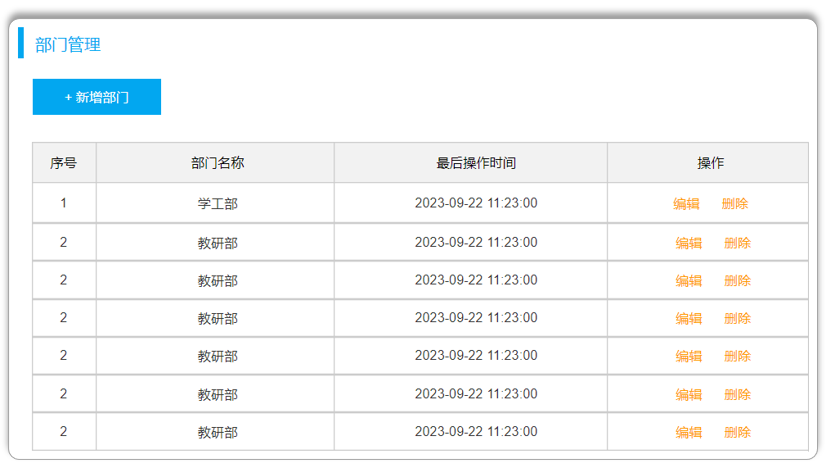
- 员工管理的页面原型：

由于一个部门下，会关联多个员工。 而一个员工，是归属于某一个部门的 。那么此时，我们就需要在 emp 表中增加一个字段 dept_id 来标识这个员工属于哪一个部门，dept_id 关联的是 dept 的 id 。 如下所示：
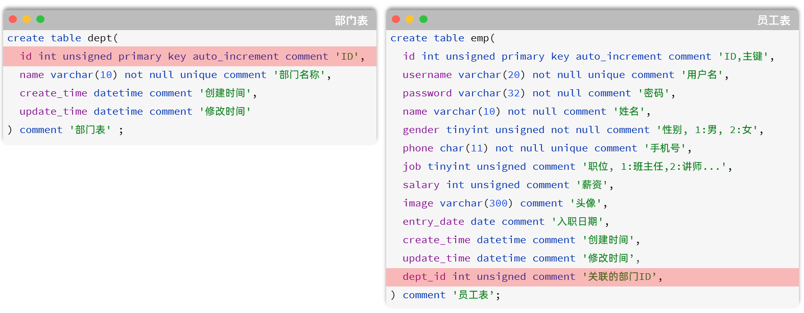
上述的 emp 员工表的 dept_id 字段，关联的是 dept 部门表的 id 。部门表是一的一方，也称为父表，员工表是多的一方，称之为子表。
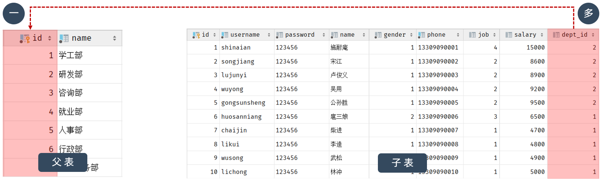
那接下来，我们就可以将上述的两张表创建出来。具体的SQL语句如下：
CREATE TABLE dept (
id int unsigned PRIMARY KEY AUTO_INCREMENT COMMENT 'ID, 主键',
name varchar(10) NOT NULL UNIQUE COMMENT '部门名称',
create_time datetime DEFAULT NULL COMMENT '创建时间',
update_time datetime DEFAULT NULL COMMENT '修改时间'
) COMMENT '部门表';
INSERT INTO dept VALUES (1,'学工部','2024-09-25 09:47:40','2023-04-25 09:47:40'),
(2,'教研部','2024-09-25 09:47:40','2024-10-09 15:17:04'),
(3,'咨询部2','2024-09-25 09:47:40','2024-11-30 21:26:24'),
(4,'就业部','2024-09-25 09:47:40','2024-09-25 09:47:40'),
(5,'人事部','2024-09-25 09:47:40','2024-09-25 09:47:40'),
(6,'行政部','2024-11-30 20:56:37','2024-11-30 20:56:37');
create table emp(
id int unsigned primary key auto_increment comment 'ID,主键',
username varchar(20) not null unique comment '用户名',
password varchar(50) default '123456' comment '密码',
name varchar(10) not null comment '姓名',
gender tinyint unsigned not null comment '性别, 1:男, 2:女',
phone char(11) not null unique comment '手机号',
job tinyint unsigned comment '职位, 1 班主任, 2 讲师 , 3 学工主管, 4 教研主管, 5 咨询师',
salary int unsigned comment '薪资',
image varchar(300) comment '头像',
entry_date date comment '入职日期',
dept_id int unsigned comment '部门ID',
create_time datetime comment '创建时间',
update_time datetime comment '修改时间'
) comment '员工表';
INSERT INTO emp VALUES
(1,'shinaian','123456','施耐庵',1,'13309090001',4,15000,'5.png','2000-01-01',2,'2023-10-20 16:35:33','2023-11-16 16:11:26'),
(2,'songjiang','123456','宋江',1,'13309090002',2,8600,'01.png','2015-01-01',2,'2023-10-20 16:35:33','2023-10-20 16:35:37'),
(3,'lujunyi','123456','卢俊义',1,'13309090003',2,8900,'01.png','2008-05-01',2,'2023-10-20 16:35:33','2023-10-20 16:35:39'),
(4,'wuyong','123456','吴用',1,'13309090004',2,9200,'01.png','2007-01-01',2,'2023-10-20 16:35:33','2023-10-20 16:35:41'),
(5,'gongsunsheng','123456','公孙胜',1,'13309090005',2,9500,'01.png','2012-12-05',2,'2023-10-20 16:35:33','2023-10-20 16:35:43'),
(6,'huosanniang','123456','扈三娘',2,'13309090006',3,6500,'01.png','2013-09-05',1,'2023-10-20 16:35:33','2023-10-20 16:35:45'),
(7,'chaijin','123456','柴进',1,'13309090007',1,4700,'01.png','2005-08-01',1,'2023-10-20 16:35:33','2023-10-20 16:35:47'),
(8,'likui','123456','李逵',1,'13309090008',1,4800,'01.png','2014-11-09',1,'2023-10-20 16:35:33','2023-10-20 16:35:49'),
(9,'wusong','123456','武松',1,'13309090009',1,4900,'01.png','2011-03-11',1,'2023-10-20 16:35:33','2023-10-20 16:35:51'),
(10,'linchong','123456','林冲',1,'13309090010',1,5000,'01.png','2013-09-05',1,'2023-10-20 16:35:33','2023-10-20 16:35:53'),
(11,'huyanzhuo','123456','呼延灼',1,'13309090011',2,9700,'01.png','2007-02-01',2,'2023-10-20 16:35:33','2023-10-20 16:35:55'),
(12,'xiaoliguang','123456','小李广',1,'13309090012',2,10000,'01.png','2008-08-18',2,'2023-10-20 16:35:33','2023-10-20 16:35:57'),
(13,'yangzhi','123456','杨志',1,'13309090013',1,5300,'01.png','2012-11-01',1,'2023-10-20 16:35:33','2023-10-20 16:35:59'),
(14,'shijin','123456','史进',1,'13309090014',2,10600,'01.png','2002-08-01',2,'2023-10-20 16:35:33','2023-10-20 16:36:01'),
(15,'sunerniang','123456','孙二娘',2,'13309090015',2,10900,'01.png','2011-05-01',2,'2023-10-20 16:35:33','2023-10-20 16:36:03'),
(16,'luzhishen','123456','鲁智深',1,'13309090016',2,9600,'01.png','2010-01-01',2,'2023-10-20 16:35:33','2023-10-20 16:36:05'),
(17,'liying','12345678','李应',1,'13309090017',1,5800,'01.png','2015-03-21',1,'2023-10-20 16:35:33','2023-10-20 16:36:07'),
(18,'shiqian','123456','时迁',1,'13309090018',2,10200,'01.png','2015-01-01',2,'2023-10-20 16:35:33','2023-10-20 16:36:09'),
(19,'gudasao','123456','顾大嫂',2,'13309090019',2,10500,'01.png','2008-01-01',2,'2023-10-20 16:35:33','2023-10-20 16:36:11'),
(20,'ruanxiaoer','123456','阮小二',1,'13309090020',2,10800,'01.png','2018-01-01',2,'2023-10-20 16:35:33','2023-10-20 16:36:13'),
(21,'ruanxiaowu','123456','阮小五',1,'13309090021',5,5200,'01.png','2015-01-01',3,'2023-10-20 16:35:33','2023-10-20 16:36:15'),
(22,'ruanxiaoqi','123456','阮小七',1,'13309090022',5,5500,'01.png','2016-01-01',3,'2023-10-20 16:35:33','2023-10-20 16:36:17'),
(23,'ruanji','123456','阮籍',1,'13309090023',5,5800,'01.png','2012-01-01',3,'2023-10-20 16:35:33','2023-10-20 16:36:19'),
(24,'tongwei','123456','童威',1,'13309090024',5,5000,'01.png','2006-01-01',3,'2023-10-20 16:35:33','2023-10-20 16:36:21'),
(25,'tongmeng','123456','童猛',1,'13309090025',5,4800,'01.png','2002-01-01',3,'2023-10-20 16:35:33','2023-10-20 16:36:23'),
(26,'yanshun','123456','燕顺',1,'13309090026',5,5400,'01.png','2011-01-01',3,'2023-10-20 16:35:33','2023-11-08 22:12:46'),
(27,'lijun','123456','李俊',1,'13309090027',2,6600,'8.png','2004-01-01',2,'2023-10-20 16:35:33','2023-11-16 17:56:59'),
(28,'lizhong','123456','李忠',1,'13309090028',5,5000,'6.png','2007-01-01',3,'2023-10-20 16:35:33','2023-11-17 16:34:22'),
(30,'liyun','123456','李云',1,'13309090030',NULL,NULL,'01.png','2020-03-01',NULL,'2023-10-20 16:35:33','2023-10-20 16:36:31'),
(36,'linghuchong','123456','令狐冲',1,'18809091212',2,6800,'1.png','2023-10-19',2,'2023-10-20 20:44:54','2023-11-09 09:41:04');
问题：一对多的表关系，在数据库层面该如何实现 ？
在数据库表中多的一方，添加字段，来关联一的一方的主键 。
多表问题分析
问题
表结构创建完毕后，我们看到两张表的数据分别为：
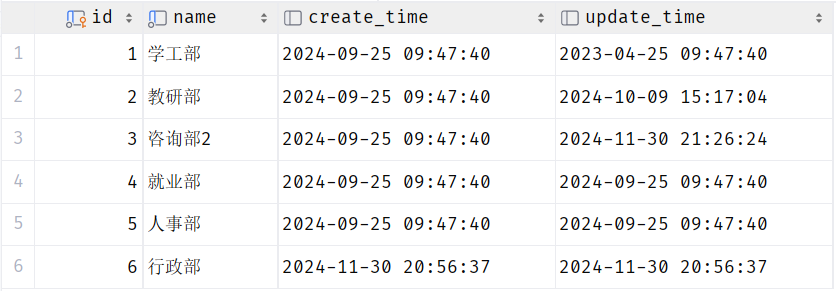
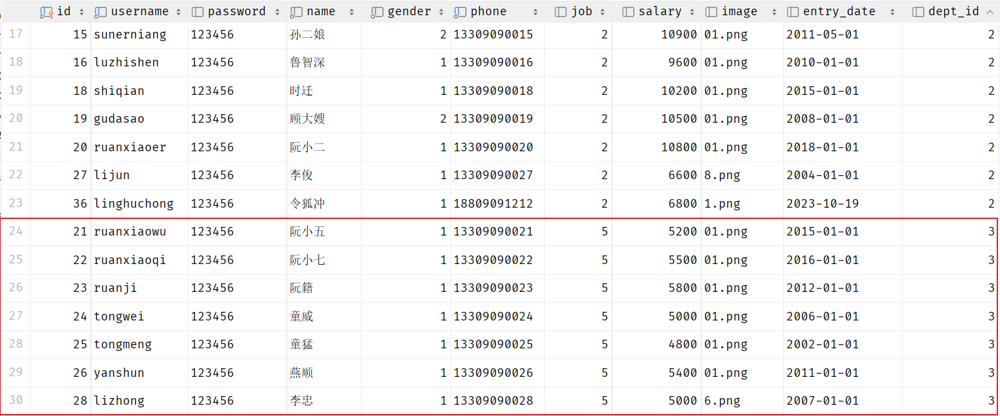
我们看到，在3号部门下，是关联的有7个员工。 当删除了3号部门后，数据变为：
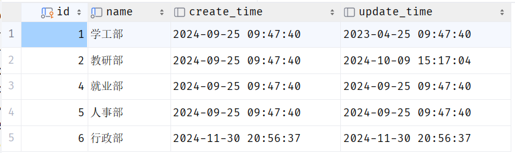

3号部门被删除了，但是依然还有7个员工是属于3号部门的。 此时：就出现数据的不完整、不一致了。
分析
- 现象：部门数据可以直接删除，然而还有部分员工归属于该部门下，此时就出现了数据的不完整、不一致问题 。
- 原因：目前上述的两张表，在数据库层面，并未建立关联，所以是无法保证数据的一致性和完整性的 。
- 解决方案：想解决上述的问题呢，我们就可以通过数据库中的 外键约束 来解决。
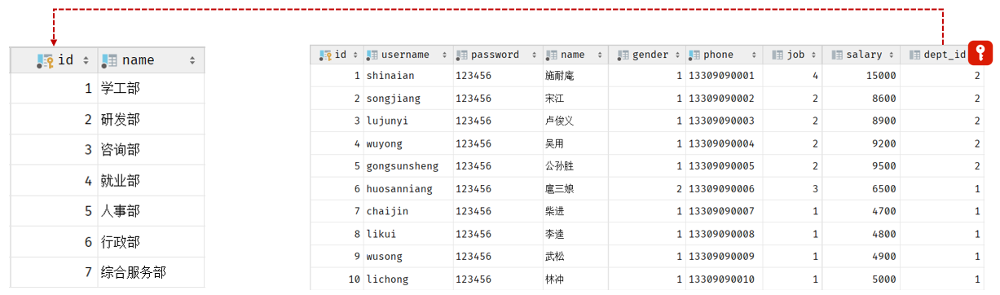
外键约束：让两张表的数据建立连接，保证数据的一致性和完整性。
对应的关键字：foreign key
外键约束的语法：
-- 创建表时指定
create table 表名(
字段名 数据类型,
...
[constraint] [外键名称] foreign key (外键字段名) references 主表 (主表列名)
);
-- 建完表后，添加外键
alter table 表名 add constraint 外键名称 foreign key(外键字段名) references 主表(主表列名);
那接下来，我们就为员工表的dept_id 建立外键约束，来关联部门表的主键。
当我们添加外键约束时，我们得保证当前数据库表中的数据是完整的。 所以，我们需要将之前删除掉的数据再添加回来。
方式1：通过SQL语句操作
-- 修改表： 添加外键约束
alter table emp add constraint fk_dept_id foreign key (dept_id) references dept(id);
**方式2：**图形化界面操作
在左侧菜单栏，在emp表上右键，选择 modify Table... (old UI)
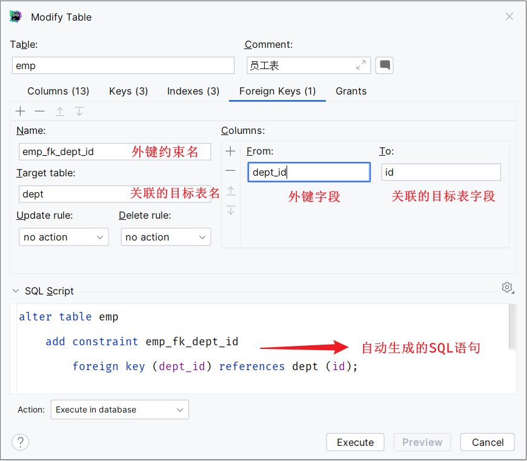
当我们添加了外键之后，再删除ID为3的部门，就会发现，此时数据库报错了，不允许删除。
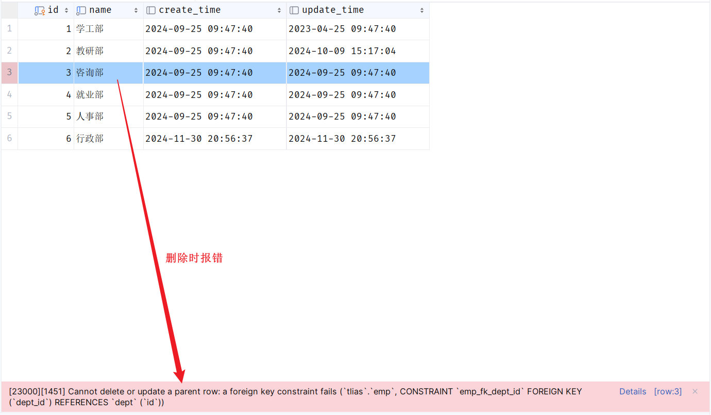
外键约束（foreign key）：保证了数据的完整性和一致性。
物理外键与逻辑外键
物理外键
概念：使用foreign key定义外键关联另外一张表。
缺点：
影响增、删、改的效率（需要检查外键关系）。
仅用于单节点数据库，不适用于分布式、集群场景。
容易引发数据库的死锁问题，消耗性能。
逻辑外键
概念：在业务层逻辑中，解决外键关联。
通过逻辑外键，就可以很方便的解决上述问题。
在现在的企业开发中，很少会使用物理外键，都是使用逻辑外键。 甚至在一些数据库开发规范中，会明确指出禁止使用物理外键 foreign key
一对一
一对一关系表在实际开发中应用起来比较简单，通常是用来做单表的拆分，也就是将一张大表拆分成两张小表，将大表中的一些基础字段放在一张表当中，将其他的字段放在另外一张表当中，以此来提高数据的操作效率。
一对一的应用场景： 用户表(基本信息+身份信息)
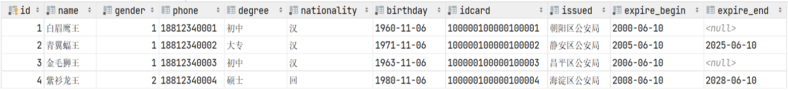
- 基本信息：用户的ID、姓名、性别、手机号、学历
- 身份信息：民族、生日、身份证号、身份证签发机关，身份证的有效期(开始时间、结束时间)
如果在业务系统当中，对用户的基本信息查询频率特别的高，但是对于用户的身份信息查询频率很低，此时出于提高查询效率的考虑，我就可以将这张大表拆分成两张小表，第一张表存放的是用户的基本信息，而第二张表存放的就是用户的身份信息。他们两者之间一对一的关系，一个用户只能对应一个身份证，而一个身份证也只能关联一个用户。
那么在数据库层面怎么去体现上述两者之间是一对一的关系呢？
其实一对一我们可以看成一种特殊的一对多。一对多我们是怎么设计表关系的？是不是在多的一方添加外键。同样我们也可以通过外键来体现一对一之间的关系，我们只需要在任意一方来添加一个外键就可以了。
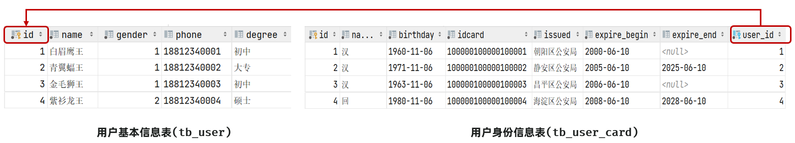
SQL脚本：
-- 用户基本信息表
create table tb_user(
id int unsigned primary key auto_increment comment 'ID',
name varchar(10) not null comment '姓名',
gender tinyint unsigned not null comment '性别, 1 男 2 女',
phone char(11) comment '手机号',
degree varchar(10) comment '学历'
) comment '用户基本信息表';
-- 测试数据
insert into tb_user values (1,'白眉鹰王',1,'18812340001','初中'),
(2,'青翼蝠王',1,'18812340002','大专'),
(3,'金毛狮王',1,'18812340003','初中'),
(4,'紫衫龙王',2,'18812340004','硕士');
-- 用户身份信息表
create table tb_user_card(
id int unsigned primary key auto_increment comment 'ID',
nationality varchar(10) not null comment '民族',
birthday date not null comment '生日',
idcard char(18) not null comment '身份证号',
issued varchar(20) not null comment '签发机关',
expire_begin date not null comment '有效期限-开始',
expire_end date comment '有效期限-结束',
user_id int unsigned not null unique comment '用户ID',
constraint fk_user_id foreign key (user_id) references tb_user(id)
) comment '用户身份信息表';
-- 测试数据
insert into tb_user_card values (1,'汉','1960-11-06','100000100000100001','朝阳区公安局','2000-06-10',null,1),
(2,'汉','1971-11-06','100000100000100002','静安区公安局','2005-06-10','2025-06-10',2),
(3,'汉','1963-11-06','100000100000100003','昌平区公安局','2006-06-10',null,3),
(4,'回','1980-11-06','100000100000100004','海淀区公安局','2008-06-10','2028-06-10',4);
一对一 ：在任意一方加入外键，关联另外一方的主键，并且设置外键为唯一的(UNIQUE)
多对多
多对多的关系在开发中属于也比较常见的。比如：学生和老师的关系，一个学生可以有多个授课老师，一个授课老师也可以有多个学生。在比如：学生和课程的关系，一个学生可以选修多门课程，一个课程也可以供多个学生选修。
案例：学生与课程的关系
- 关系：一个学生可以选修多门课程，一门课程也可以供多个学生选择
- 实现关系：建立第三张中间表，中间表至少包含两个外键，分别关联两方主键
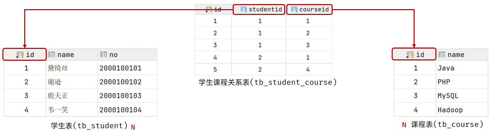
SQL脚本：
-- 学生表
create table tb_student(
id int auto_increment primary key comment '主键ID',
name varchar(10) comment '姓名',
no varchar(10) comment '学号'
) comment '学生表';
-- 学生表测试数据
insert into tb_student(name, no) values ('黛绮丝', '2000100101'),
('谢逊', '2000100102'),
('殷天正', '2000100103'),
('韦一笑', '2000100104');
-- 课程表
create table tb_course(
id int auto_increment primary key comment '主键ID',
name varchar(10) comment '课程名称'
) comment '课程表';
-- 课程表测试数据
insert into tb_course (name) values ('Java'), ('PHP'), ('MySQL') , ('Hadoop');
-- 学生课程表（中间表）
create table tb_student_course(
id int auto_increment comment '主键' primary key,
student_id int not null comment '学生ID',
course_id int not null comment '课程ID',
constraint fk_courseid foreign key (course_id) references tb_course (id),
constraint fk_studentid foreign key (student_id) references tb_student (id)
)comment '学生课程中间表';
-- 学生课程表测试数据
insert into tb_student_course(student_id, course_id) values (1,1),(1,2),(1,3),(2,2),(2,3),(3,4);
多对多 ：需要建立一张**中间表，中间表中有两个外键字段，分别关联两方的主键。**
案例
下面通过一个综合案例加深对于多表关系的理解，并掌握多表设计的流程。
需求
- 根据参考资料中提供的《Talis智能学习辅助系统》页面原型，设计员工管理模块涉及到的表结构。
步骤
- 阅读页面原型及需求文档，分析各个模块涉及到的表结构，及表结构之间的关系。
- 根据页面原型及需求文档，分析各个表结构中具体的字段及约束。
分析
涉及到的模块有：
- 部门管理
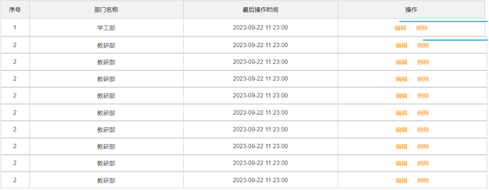
部门管理涉及到一张部门表，这个前面我们都已经设计过了。 无需再进行设计了。
- 员工管理
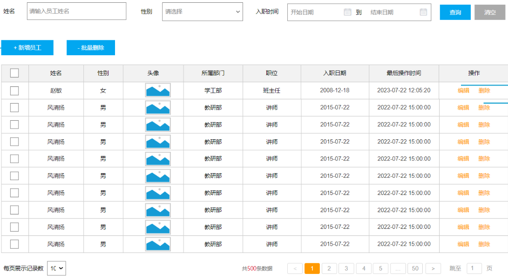
上述在员工列表查询的页面原型，当我们点击 "新增员工" 按钮时，会弹出一个新增员工的表单，表单展示形式如下：
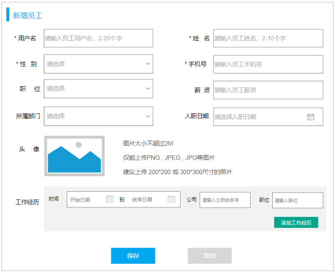
在上述的页面原型中，我们可以看到，每一个员工是归属于某一个部门的，而一个部门下可以有多个员工，所以部门与员工之间的关系是一对多的关系。
从页面员工中，我们可以看到，员工还有工作经历的信息。而每一个员工，是可以添加多个工作经历的。 所以，工作经历我们可以再设计一张表，而员工与员工的工作经历之间的关系，是一对多的关系。
那么，这里总共会涉及三张表，分别是：部门表、员工表、员工工作经历表。
最终，具体的表结构如下：
-- 部门表
create table dept (
id int unsigned PRIMARY KEY AUTO_INCREMENT COMMENT 'ID, 主键',
name varchar(10) NOT NULL UNIQUE COMMENT '部门名称',
create_time datetime COMMENT '创建时间',
update_time datetime COMMENT '修改时间'
) COMMENT '部门表';
-- 员工表
create table emp(
id int unsigned primary key auto_increment comment 'ID,主键',
username varchar(20) not null unique comment '用户名',
password varchar(50) default '123456' comment '密码',
name varchar(10) not null comment '姓名',
gender tinyint unsigned not null comment '性别, 1:男, 2:女',
phone char(11) not null unique comment '手机号',
job tinyint unsigned comment '职位, 1 班主任, 2 讲师 , 3 学工主管, 4 教研主管, 5 咨询师',
salary int unsigned comment '薪资',
image varchar(300) comment '头像',
entry_date date comment '入职日期',
dept_id int unsigned comment '部门ID', -- 关联的是dept部门表的ID
create_time datetime comment '创建时间',
update_time datetime comment '修改时间'
) comment '员工表';
-- 员工工作经历表
create table emp_expr(
id int unsigned primary key auto_increment comment 'ID, 主键',
emp_id int unsigned null comment '员工ID', -- 关联的是emp员工表的ID
begin date null comment '开始时间',
end date null comment '结束时间',
company varchar(50) null comment '公司名称',
job varchar(50) null comment '职位'
) comment '工作经历';
注意：在上述的表结构设计中，我们使用的都是逻辑外键。
多表查询：
查询时从多张表中获取所需数据
单表查询的SQL语句：select 字段列表 from 表名;
那么要执行多表查询，只需要使用逗号分隔多张表即可，如： select 字段列表 from 表1, 表2;
查询用户表和部门表中的数据：
select * from emp , dept;
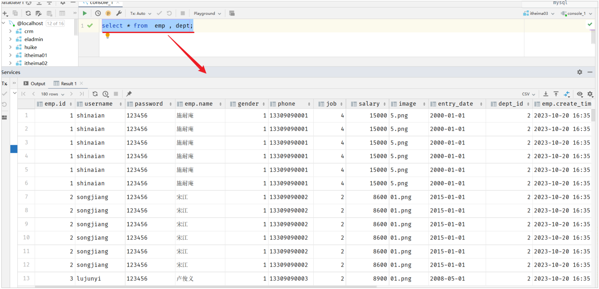
此时，我们看到查询结果中包含了大量的结果集，总共180条记录，而这其实就是员工表所有的记录(30行)与部门表所有记录(6行)的所有组合情况，这种现象称之为笛卡尔积。
笛卡尔积**：**笛卡尔乘积是指在数学中，两个集合(A集合和B集合)的所有组合情况。
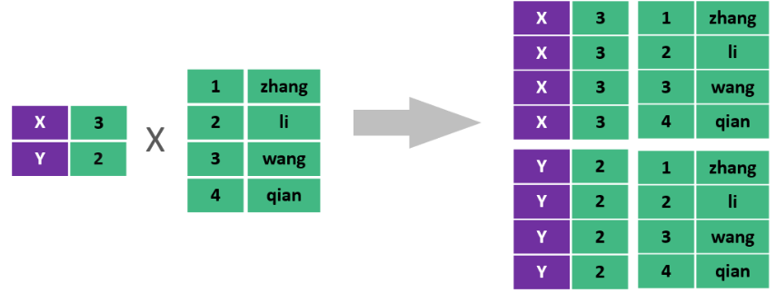
在多表查询时，需要消除无效的笛卡尔积，只保留表关联部分的数据。
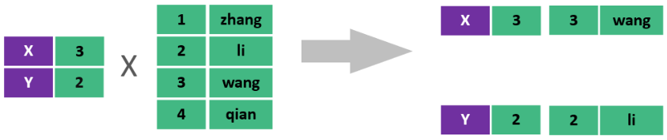
在SQL语句中，如何去除无效的笛卡尔积呢？只需要给多表查询加上连接查询的条件即可。
select * from emp , dept where emp.dept_id = dept.id ;
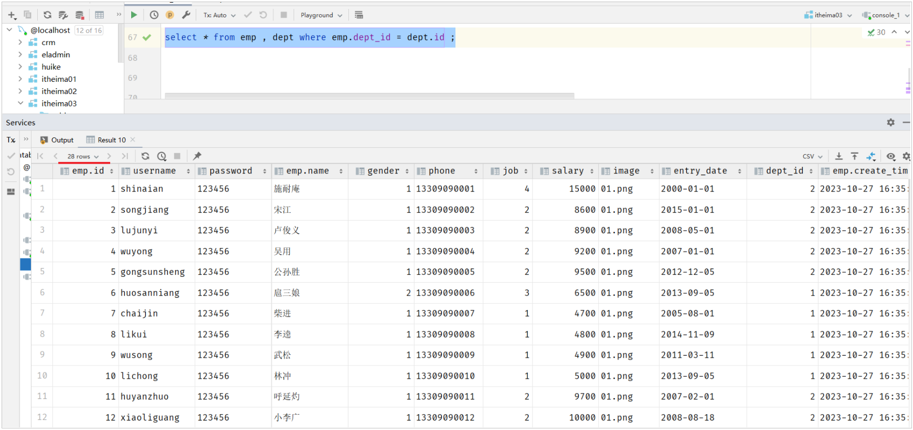
这样，我们就查询出来了所有的员工，及其这个员工所属的部门信息。 而由于id为29、30的员工，没有dept_id字段值，所以在多表查询时，根据连接查询的条件并没有查询到。
分类
多表查询可以分为：
连接查询
内连接：相当于查询A、B交集部分数据
外连接
- 左外连接：查询左表所有数据(包括两张表交集部分数据)
- 右外连接：查询右表所有数据(包括两张表交集部分数据)
- 子查询
内连接 (取两个表之间的交集)
内连接查询：查询两表或多表中交集部分数据。
内连接从语法上可以分为：
- 隐式内连接
- 显式内连接
显隐 的查询效果都一样 , 不一样的只有语法;
隐式内连接语法：
select 字段列表 from 表1 , 表2 where 条件 ... ;
显式内连接语法：
select 字段列表 from 表1 [ inner ] join 表2 on 连接条件 ... ;
案例1：查询所有员工的ID，姓名，及所属的部门名称
隐式内连接实现 where
select emp.id, emp.name, dept.name from emp , dept where emp.dept_id = dept.id;
- 显式内连接实现 inner join xx on xx
select emp.id, emp.name, dept.name from emp inner join dept on emp.dept_id = dept.id;
案例2：查询 性别为男, 且工资 高于8000 的员工的ID, 姓名, 及所属的部门名称
隐式内连接实现
select emp.id, emp.name, dept.name from emp , dept where emp.dept_id = dept.id and emp.gender = 1 and emp.salary > 8000;
- 显式内连接实现
select emp.id, emp.name, dept.name from emp inner join dept on emp.dept_id = dept.id where emp.gender = 1 and emp.salary > 8000;
在多表联查时，我们指定字段时，需要在字段名前面加上表名，来指定具体是哪一张的字段。 如：emp.dept_id
给表起别名简化书写：
起别名的方式 可以简述 为 : 向表1, 表二 后面直补上 as + 别名 直接定义 , 注意 : 操作数据的时候****必须使用创建号的别名 操作数据 ;
select 字段列表 from 表1 as 别名1 , 表2 as 别名2 where 条件 ... ;
select 字段列表 from 表1 别名1 , 表2 别名2 where 条件 ... ; -- as 可以省略
使用了别名的多表查询：
select e.id, e.name, d.name from emp as e , dept as d where e.dept_id = d.id and e.gender = 1 and e.salary > 8000;
**注意事项:**一旦为表起了别名，就不能再使用表名来指定对应的字段了，此时只能够使用别名来指定字段。
外连接(left join 的左表和右表用位置区分 ,会完全包含 左,右表中的内容)
外连接分为两种：左外连接 和 右外连接。
左外连接语法：
select 字段列表 from 表1 left [ outer ] join 表2 on 连接条件 where 后续的条件... ;
左外连接相当于查询表1(左表)的所有数据，当然也包含表1和表2交集部分的数据。
右外连接语法：
select 字段列表 from 表1 right [ outer ] join 表2 on 连接条件 where 后序的条件... ;
右外连接相当于查询表2(右表)的所有数据，当然也包含表1和表2交集部分的数据。
案例1：查询员工表 所有 员工的姓名, 和对应的部门名称 (左外连接)
-- 左外连接：以left join关键字左边的表为主表，查询主表中所有数据，以及和主表匹配的右边表中的数据
select e.name , d.name from emp as e left join dept as d on e.dept_id = d.id ;
案例2：查询部门表 所有 部门的名称, 和对应的员工名称 (右外连接)
-- 右外连接：以right join关键字右边的表为主表，查询主表中所有数据，以及和主表匹配的左边表中的数据
select e.name , d.name from emp as e right join dept as d on e.dept_id = d.id;
案例3：查询工资 高于8000 的 所有员工的姓名, 和对应的部门名称 (左外连接)
select e.name , d.name from emp as e left join dept as d on e.dept_id = d.id where e.salary > 8000;
注意事项：
左外连接和右外连接是可以相互替换的，只需 要调整连接查询时SQL语句中表的先后顺序就可以了。而我们在日常开发使用时，更偏向于左外连接。
子查询(复杂的嵌套SQL语句)(内部已知数据转换为 (查询已知数据的SQL ))
介绍
SQL语句中嵌套select语句，称为嵌套查询，又称子查询。
SELECT * FROM t1 WHERE column1 = ( SELECT column1 FROM t2 ... );
子查询外部的语句可以是insert / update / delete / select 的任何一个，最常见的是 select。
根据子查询结果的不同分为：
- 标量子查询（子查询结果为单个值 [一行一列]）
- 列子查询（子查询结果为一列，但可以是多行）
- 行子查询（子查询结果为一行，但可以是多列）
- 表子查询（子查询结果为多行多列[相当于子查询结果是一张表]）
子查询可以书写的位置：
- where之后
- from之后
- select之后
子查询的要点是，先对需求做拆分，明确具体的步骤，然后再逐条编写SQL语句。 最终将多条SQL语句合并为一条。
标量子查询
子查询返回的结果是单个值(数字、字符串、日期等)，最简单的形式，这种子查询称为标量子查询。
常用的操作符： = <> > >= < <=
- 案例1：查询 最早入职 的员工信息
-- 1. 查询最早的入职时间
select min(entry_date) from emp; -- 结果: 2000-01-01
-- 2. 查询入职时间 = 最早入职时间的员工信息
select * from emp where entry_date = '2000-01-01';
-- 3. 合并为一条SQL
select * from emp where entry_date = (select min(entry_date) from emp);
- 案例2：查询在 阮小五 入职之后入职的员工信息
-- 1. 查询 "阮小五" 的入职日期
select entry_date from emp where name = '阮小五'; -- 结果: 2015-01-01
-- 2. 根据上述查询到的这个入职日期, 查询在该日期之后入职的员工信息
select * from emp where entry_date > '2015-01-01';
-- 3. 合并SQL为一条SQL
select * from emp where entry_date > (select entry_date from emp where name = '阮小五');
列子查询
子查询返回的结果是一列(可以是多行)，这种子查询称为列子查询。
常用的操作符：
操作符 | 描述 |
in | 在指定的集合范围之内，多选一 |
not in | 不在指定的集合范围之内 |
- 案例1：查询 "教研部" 和 "咨询部" 的所有员工信息
-- 1. 查询 "教研部" 和 "咨询部" 的部门ID
select id from dept where name = '教研部' or name = '咨询部'; -- 结果: 3,2
-- 2. 根据上面查询出来的部门ID, 查询员工信息
select * from emp where dept_id in(3,2);
-- 3. 合并SQL为一条SQL语句
select * from emp where dept_id in (select id from dept where name = '教研部' or name = '咨询部');
行子查询 (实际 上 就是 多列查询 : 实现多个列子查询 )
子查询返回的结果是一行(可以是多列)，这种子查询称为行子查询。
常用的操作符：= 、<> 、IN 、NOT IN ( 实际上就是一种多查询 ) ;
- 案例1：查询与 "李忠" 的薪资 及 职位都相同的员工信息
-- 1. 查询 "李忠" 的薪资和职位
select salary , job from emp where name = '李忠'; -- 结果: 5000, 5
-- 2. 根据上述查询到的薪资和职位 , 查询对应员工的信息
select * from emp where (salary, job) = (5000,5);
-- 3. 将两条SQL合并为一条SQL
select * from emp where (salary, job) = (select salary , job from emp where name = '李忠');
表子查询 (直接将select 获取到的 结果 作为 表 直接参与 SQL ) (对放入的子标设置别名 : 最大的作用)
子查询返回的结果是多行多列，常作为临时表，这种子查询称为表子查询。
直接获取到 多个多列 ;
- 案例：获取每个部门中薪资最高的员工信息
-- a. 获取每个部门的最高薪资
select dept_id, max(salary) from emp group by dept_id;
-- b. 查询每个部门中薪资最高的员工信息
select * from emp e , (select dept_id, max(salary) max_sal from emp group by dept_id) a
where e.dept_id = a.dept_id and e.salary = a.max_sal;
案例
根据需求，完成多表查询的SQL语句的编写。
- 1. 查询 "教研部" 性别为 男，且在 "2011-05-01" 之后入职的员工信息 。
select e.* from emp as e , dept as d where e.dept_id = d.id and d.name = '教研部' and e.gender = 1 and e.entry_date > '2011-05-01';
- 2. 查询工资 低于公司平均工资的 且 性别为男 的员工信息 。
select e.* from emp as e , dept as d where e.dept_id = d.id and e.salary < (select avg(salary) from emp) and e.gender = 1;
- 3. 查询部门人数超过 10 人的部门名称 。
select d.name , count(*) from emp as e , dept as d where e.dept_id = d.id group by d.name having count(*) > 10;
- 4. 查询在 "2010-05-01" 后入职，且薪资高于 10000 的 "教研部" 员工信息，并根据薪资倒序排序。
select * from emp e , dept d where e.dept_id = d.id and e.entry_date > '2010-05-01' and e.salary > 10000 and d.name = '教研部' order by e.salary desc;
- 5. 查询工资 低于本部门平均工资的员工信息 。【难】
-- 5.1 查询每个部门的平均工资
select dept_id, avg(salary) avg_sal from emp group by dept_id;
-- 5.2 查询工资 低于本部门平均工资 的员工信息 。
select e.* from emp e , (select dept_id, avg(salary) avg_sal from emp group by dept_id) as a
where e.dept_id = a.dept_id and e.salary < a.avg_sal;
员工列表查询
那接下来，我们要来完成的是员工列表的查询功能实现。 具体的需求如下：
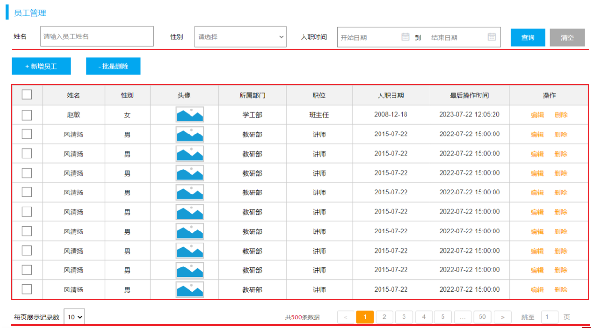
在查询员工列表数据时，既需要查询 员工的基本信息，还需要查询员工所属的部门名称，所以这里呢，会涉及到多表查询的操作。
而且，在查询员工列表数据时，既要考虑搜索栏中的查询条件，还要考虑对查询的结果进行分页处理。
那么接下来，我们在实现这个功能时，将会分为三个部分来逐一实现：
- 准备工作
- 分页查询
- 条件分页查询
准备工作
需求：查询所有员工信息，并查询出部门名称。（涉及到的表：emp、dept）
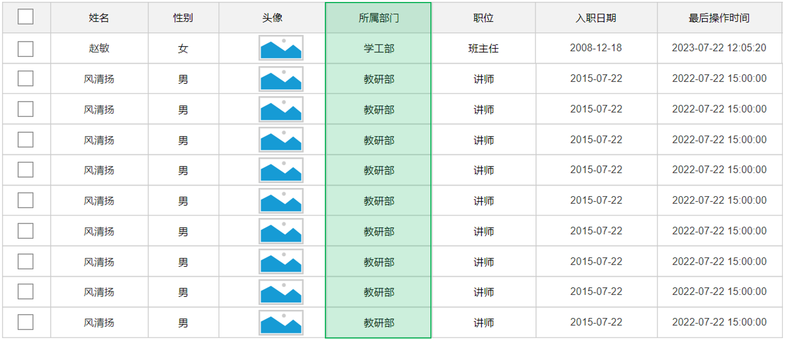
基础代码准备
1). 创建员工管理相关表结构
-- 员工表
create table emp(
id int unsigned primary key auto_increment comment 'ID,主键',
username varchar(20) not null unique comment '用户名',
password varchar(50) default '123456' comment '密码',
name varchar(10) not null comment '姓名',
gender tinyint unsigned not null comment '性别, 1:男, 2:女',
phone char(11) not null unique comment '手机号',
job tinyint unsigned comment '职位, 1 班主任, 2 讲师 , 3 学工主管, 4 教研主管, 5 咨询师',
salary int unsigned comment '薪资',
image varchar(300) comment '头像',
entry_date date comment '入职日期',
dept_id int unsigned comment '部门ID',
create_time datetime comment '创建时间',
update_time datetime comment '修改时间'
) comment '员工表';
INSERT INTO emp VALUES
(1,'shinaian','123456','施耐庵',1,'13309090001',4,15000,'https://web-framework.oss-cn-hangzhou.aliyuncs.com/2023/1.jpg','2000-01-01',2,'2023-10-20 16:35:33','2023-11-16 16:11:26'),
(2,'songjiang','123456','宋江',1,'13309090002',2,8600,'https://web-framework.oss-cn-hangzhou.aliyuncs.com/2023/1.jpg','2015-01-01',2,'2023-10-20 16:35:33','2023-10-20 16:35:37'),
(3,'lujunyi','123456','卢俊义',1,'13309090003',2,8900,'https://web-framework.oss-cn-hangzhou.aliyuncs.com/2023/1.jpg','2008-05-01',2,'2023-10-20 16:35:33','2023-10-20 16:35:39'),
(4,'wuyong','123456','吴用',1,'13309090004',2,9200,'https://web-framework.oss-cn-hangzhou.aliyuncs.com/2023/1.jpg','2007-01-01',2,'2023-10-20 16:35:33','2023-10-20 16:35:41'),
(5,'gongsunsheng','123456','公孙胜',1,'13309090005',2,9500,'https://web-framework.oss-cn-hangzhou.aliyuncs.com/2023/1.jpg','2012-12-05',2,'2023-10-20 16:35:33','2023-10-20 16:35:43'),
(6,'huosanniang','123456','扈三娘',2,'13309090006',3,6500,'https://web-framework.oss-cn-hangzhou.aliyuncs.com/2023/1.jpg','2013-09-05',1,'2023-10-20 16:35:33','2023-10-20 16:35:45'),
(7,'chaijin','123456','柴进',1,'13309090007',1,4700,'https://web-framework.oss-cn-hangzhou.aliyuncs.com/2023/1.jpg','2005-08-01',1,'2023-10-20 16:35:33','2023-10-20 16:35:47'),
(8,'likui','123456','李逵',1,'13309090008',1,4800,'https://web-framework.oss-cn-hangzhou.aliyuncs.com/2023/1.jpg','2014-11-09',1,'2023-10-20 16:35:33','2023-10-20 16:35:49'),
(9,'wusong','123456','武松',1,'13309090009',1,4900,'https://web-framework.oss-cn-hangzhou.aliyuncs.com/2023/1.jpg','2011-03-11',1,'2023-10-20 16:35:33','2023-10-20 16:35:51'),
(10,'linchong','123456','林冲',1,'13309090010',1,5000,'https://web-framework.oss-cn-hangzhou.aliyuncs.com/2023/1.jpg','2013-09-05',1,'2023-10-20 16:35:33','2023-10-20 16:35:53'),
(11,'huyanzhuo','123456','呼延灼',1,'13309090011',2,9700,'https://web-framework.oss-cn-hangzhou.aliyuncs.com/2023/1.jpg','2007-02-01',2,'2023-10-20 16:35:33','2023-10-20 16:35:55'),
(12,'xiaoliguang','123456','小李广',1,'13309090012',2,10000,'https://web-framework.oss-cn-hangzhou.aliyuncs.com/2023/1.jpg','2008-08-18',2,'2023-10-20 16:35:33','2023-10-20 16:35:57'),
(13,'yangzhi','123456','杨志',1,'13309090013',1,5300,'https://web-framework.oss-cn-hangzhou.aliyuncs.com/2023/1.jpg','2012-11-01',1,'2023-10-20 16:35:33','2023-10-20 16:35:59'),
(14,'shijin','123456','史进',1,'13309090014',2,10600,'https://web-framework.oss-cn-hangzhou.aliyuncs.com/2023/1.jpg','2002-08-01',2,'2023-10-20 16:35:33','2023-10-20 16:36:01'),
(15,'sunerniang','123456','孙二娘',2,'13309090015',2,10900,'https://web-framework.oss-cn-hangzhou.aliyuncs.com/2023/1.jpg','2011-05-01',2,'2023-10-20 16:35:33','2023-10-20 16:36:03'),
(16,'luzhishen','123456','鲁智深',1,'13309090016',2,9600,'https://web-framework.oss-cn-hangzhou.aliyuncs.com/2023/1.jpg','2010-01-01',2,'2023-10-20 16:35:33','2023-10-20 16:36:05'),
(17,'liying','12345678','李应',1,'13309090017',1,5800,'https://web-framework.oss-cn-hangzhou.aliyuncs.com/2023/1.jpg','2015-03-21',1,'2023-10-20 16:35:33','2023-10-20 16:36:07'),
(18,'shiqian','123456','时迁',1,'13309090018',2,10200,'https://web-framework.oss-cn-hangzhou.aliyuncs.com/2023/1.jpg','2015-01-01',2,'2023-10-20 16:35:33','2023-10-20 16:36:09'),
(19,'gudasao','123456','顾大嫂',2,'13309090019',2,10500,'https://web-framework.oss-cn-hangzhou.aliyuncs.com/2023/1.jpg','2008-01-01',2,'2023-10-20 16:35:33','2023-10-20 16:36:11'),
(20,'ruanxiaoer','123456','阮小二',1,'13309090020',2,10800,'https://web-framework.oss-cn-hangzhou.aliyuncs.com/2023/1.jpg','2018-01-01',2,'2023-10-20 16:35:33','2023-10-20 16:36:13'),
(21,'ruanxiaowu','123456','阮小五',1,'13309090021',5,5200,'https://web-framework.oss-cn-hangzhou.aliyuncs.com/2023/1.jpg','2015-01-01',3,'2023-10-20 16:35:33','2023-10-20 16:36:15'),
(22,'ruanxiaoqi','123456','阮小七',1,'13309090022',5,5500,'https://web-framework.oss-cn-hangzhou.aliyuncs.com/2023/1.jpg','2016-01-01',3,'2023-10-20 16:35:33','2023-10-20 16:36:17'),
(23,'ruanji','123456','阮籍',1,'13309090023',5,5800,'https://web-framework.oss-cn-hangzhou.aliyuncs.com/2023/1.jpg','2012-01-01',3,'2023-10-20 16:35:33','2023-10-20 16:36:19'),
(24,'tongwei','123456','童威',1,'13309090024',5,5000,'https://web-framework.oss-cn-hangzhou.aliyuncs.com/2023/1.jpg','2006-01-01',3,'2023-10-20 16:35:33','2023-10-20 16:36:21'),
(25,'tongmeng','123456','童猛',1,'13309090025',5,4800,'https://web-framework.oss-cn-hangzhou.aliyuncs.com/2023/1.jpg','2002-01-01',3,'2023-10-20 16:35:33','2023-10-20 16:36:23'),
(26,'yanshun','123456','燕顺',1,'13309090026',5,5400,'https://web-framework.oss-cn-hangzhou.aliyuncs.com/2023/1.jpg','2011-01-01',3,'2023-10-20 16:35:33','2023-11-08 22:12:46'),
(27,'lijun','123456','李俊',1,'13309090027',2,6600,'https://web-framework.oss-cn-hangzhou.aliyuncs.com/2023/1.jpg','2004-01-01',2,'2023-10-20 16:35:33','2023-11-16 17:56:59'),
(28,'lizhong','123456','李忠',1,'13309090028',5,5000,'https://web-framework.oss-cn-hangzhou.aliyuncs.com/2023/1.jpg','2007-01-01',3,'2023-10-20 16:35:33','2023-11-17 16:34:22'),
(30,'liyun','123456','李云',1,'13309090030',NULL,NULL,'https://web-framework.oss-cn-hangzhou.aliyuncs.com/2023/1.jpg','2020-03-01',NULL,'2023-10-20 16:35:33','2023-10-20 16:36:31'),
(36,'linghuchong','123456','令狐冲',1,'18809091212',2,6800,'https://web-framework.oss-cn-hangzhou.aliyuncs.com/2023/1.jpg','2023-10-19',2,'2023-10-20 20:44:54','2023-11-09 09:41:04');
-- 员工工作经历信息
create table emp_expr(
id int unsigned primary key auto_increment comment 'ID, 主键',
emp_id int unsigned comment '员工ID',
begin date comment '开始时间',
end date comment '结束时间',
company varchar(50) comment '公司名称',
job varchar(50) comment '职位'
)comment '工作经历';
2). 准备emp表对应的实体类Emp、EmpExpr
package com.itheima.pojo;
import lombok.Data;
import java.time.LocalDate;
import java.time.LocalDateTime;
import java.util.List;
@Data
public class Emp {
private Integer id; //ID,主键
private String username; //用户名
private String password; //密码
private String name; //姓名
private Integer gender; //性别, 1:男, 2:女
private String phone; //手机号
private Integer job; //职位, 1:班主任,2:讲师,3:学工主管,4:教研主管,5:咨询师
private Integer salary; //薪资
private String image; //头像
private LocalDate entryDate; //入职日期
private Integer deptId; //关联的部门ID
private LocalDateTime createTime; //创建时间
private LocalDateTime updateTime; //修改时间
//封装部门名称数
private String deptName; //部门名称
}
package com.itheima.pojo;
import lombok.Data;
import java.time.LocalDate;
/**
* 工作经历
*/
@Data
public class EmpExpr {
private Integer id; //ID
private Integer empId; //员工ID
private LocalDate begin; //开始时间
private LocalDate end; //结束时间
private String company; //公司名称
private String job; //职位
}
3). 准备Emp员工管理的基础结构，包括****Controller、Service、Mapper
EmpMapper：
package com.itheima.mapper;
import com.itheima.pojo.Emp;
import org.apache.ibatis.annotations.Mapper;
import java.util.List;
@Mapper
public interface EmpMapper {
}
EmpService:
package com.itheima.service;
public interface EmpService {
}
EmpServiceImpl:
package com.itheima.service.impl;
import com.itheima.mapper.EmpMapper;
import com.itheima.service.EmpService;
import org.springframework.beans.factory.annotation.Autowired;
import org.springframework.stereotype.Service;
/**
* 员工管理
*/
@Service
public class EmpServiceImpl implements EmpService {
@Autowired
private EmpMapper empMapper;
}
EmpController:
package com.itheima.controller;
import com.itheima.service.EmpService;
import lombok.extern.slf4j.Slf4j;
import org.springframework.beans.factory.annotation.Autowired;
import org.springframework.web.bind.annotation.RestController;
/**
* 员工管理
*/
@Slf4j
@RestController
public class EmpController {
@Autowired
private EmpService empService;
}
SQL&Mapper接口
那接下来，我们就先考虑一下要查询所有的员工数据，及其关联的部门名称，这个SQL语句该如何实现 ？ 这里，要查询所有的员工，也就意味着，即使员工没有部门，也需要将该员工查询出来 。
所以，这里需要用左外连接实现，具体SQL如下：
1). 基于AI生成对应的SQL语句
-- 查询所有的员工信息，如果员工关联了部门，也要查询出部门名称
select e.*, d.name as dept_name from emp e left join dept d on e.dept_id = d.id;
2). Mapper接口方法定义
那接下来，我们就定义一个员工管理的mapper接口 EmpMapper 并在其中完成员工信息的查询。 具体代码如下：
@Mapper
public interface EmpMapper {
/**
* 查询所有的员工及其对应的部门名称
*/
@Select("select e.*, d.name as deptName from emp e left join dept d on e.dept_id = d.id")
public List<Emp> list();
}
注意，上述SQL语句中，给 部门名称起了别名 deptName ，是因为在接口文档中，要求部门名称给前端返回的数据中，就必须叫 deptName。 而这里我们需要将查询返回的每一条记录都封装到Emp对象中，那么就必须保证查询返回的字段名与属性名是一一对应的。
此时，我们就需要在Emp中定义一个属性 deptName 用来封装部门名称。 具体如下：
@Data
public class Emp {
private Integer id; //ID,主键
private String username; //用户名
private String password; //密码
private String name; //姓名
private Integer gender; //性别, 1:男, 2:女
private String phone; //手机号
private Integer job; //职位, 1:班主任,2:讲师,3:学工主管,4:教研主管,5:咨询师
private Integer salary; //薪资
private String image; //头像
private LocalDate entryDate; //入职日期
private Integer deptId; //关联的部门ID
private LocalDateTime createTime; //创建时间
private LocalDateTime updateTime; //修改时间
//封装部门名称数
private String deptName; //部门名称
}
代码编写完毕后，我们可以编写一个单元测试，对上述的程序进行测试：
@SpringBootTest
class TliasWebManagementApplicationTests {
@Autowired
private EmpMapper empMapper;
@Test
public void testList(){
List<Emp> empList = empMapper.list();
empList.forEach(System.out::println);
}
}
运行单元测试后，我们看到控制台输出的数据：
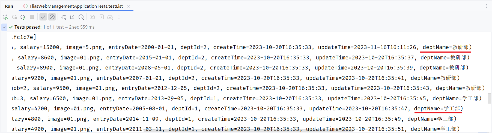
可以看到，员工的信息，员工关联的部门名称都查询出来了。
分页查询
分析
上述我们在Mapper接口中定义了接口方法，完成了查询所有员工及其部门名称的功能，是将数据库中所有的数据查询出来了。 试想如果数据库中的数据有很多(假设有几千几万条)的时候，将数据全部展示出来肯定不现实，那如何解决这个问题呢？
使用分页解决这个问题。每次只展示一页的数据，比如：一页展示10条数据，如果还想看其他的数据，可以通过点击页码进行查询。
而在员工管理的需求中，就要求我们进行分页查询，展示出对应的数据。 具体的页面原型如下：
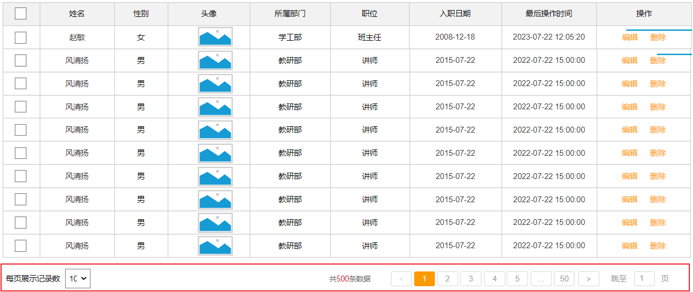
要想从数据库中进行分页查询，我们要使用LIMIT关键字，格式为：limit 开始索引 每页显示的条数。
1). 查询第1页数据的SQL语句是：
select * from emp limit 0,10;
2). 查询第2页数据的SQL语句是：
select * from emp limit 10,10;
3). 查询第3页的数据的SQL语句是：
select * from emp limit 20,10;
观察以上SQL语句，发现： 开始索引一直在改变 ， 每页显示条数是固定的
开始索引的计算公式： 开始索引 = (当前页码 - 1) * 每页显示条数
我们继续基于页面原型，继续分析，得出以下结论：
前端在请求服务端时，传递的参数
当前页码 page
每页显示条数 pageSize
后端需要响应什么数据给前端
所查询到的数据列表（存储到List 集合中）
总记录数
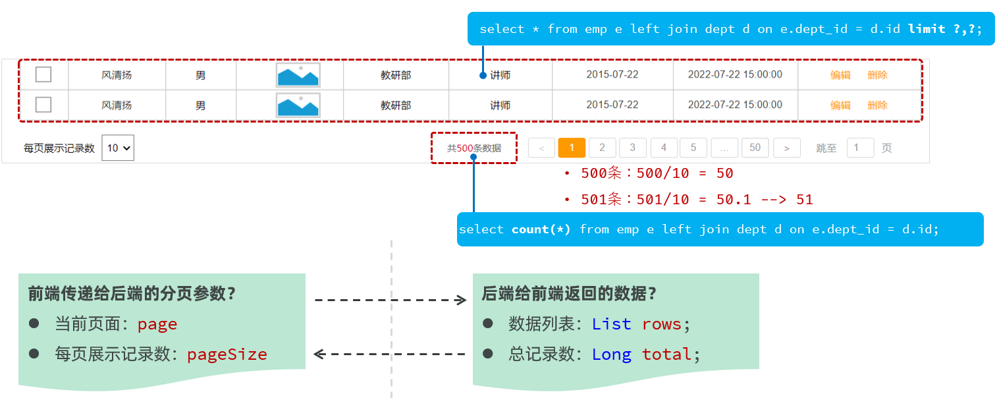
后台给前端返回的数据包含：List集合(数据列表)、total(总记录数)
而这两部分我们通常封装到PageResult对象中，并将该对象转换为json格式的数据响应回给浏览器。
@Data
@NoArgsConstructor
@AllArgsConstructor
public class PageResult {
private Long total; //总记录数
private List rows; //当前页数据列表
}
接口描述
1). 基本信息
请求路径：/emps
请求方式：GET
接口描述：该接口用于员工列表数据的条件分页查询
2). 请求参数
参数名称 | 是否必须 | 示例 | 备注 |
name | 否 | 张 | 姓名 |
gender | 否 | 1 | 性别 , 1 男 , 2 女 |
begin | 否 | 2010/1/1 | 范围匹配的开始时间(入职日期) |
end | 否 | 2020/1/1 | 范围匹配的结束时间(入职日期) |
page | 是 | 1 | 分页查询的页码，如果未指定，默认为1 |
pageSize | 是 | 10 | 分页查询的每页记录数，如果未指定，默认为10 |
请求数据样例：
/emps?name=张&gender=1&begin=2007-09-01&end=2022-09-01&page=1&pageSize=10
3). 响应数据
参数格式：application/json
参数说明：
名称 | 类型 | 是否必须 | 备注 |
code | number | 必须 | 响应码, 1 成功 , 0 失败 |
msg | string | 非必须 | 提示信息 |
data | object | 必须 | 返回的数据 |
|- total | number | 必须 | 总记录数 |
|- rows | object [] | 必须 | 数据列表 |
|- id | number | 非必须 | id |
|- username | string | 非必须 | 用户名 |
|- name | string | 非必须 | 姓名 |
|- password | string | 非必须 | 密码 |
|- gender | number | 非必须 | 性别 , 1 男 ; 2 女 |
|- image | string | 非必须 | 图像 |
|- job | number | 非必须 | 职位, 说明: 1 班主任,2 讲师, 3 学工主管, 4 教研主管, 5 咨询师 |
|- salary | number | 非必须 | 薪资 |
|- entryDate | string | 非必须 | 入职日期 |
|- deptId | number | 非必须 | 部门id |
|- deptName | string | 非必须 | 部门名称 |
|- createTime | string | 非必须 | 创建时间 |
|- updateTime | string | 非必须 | 更新时间 |
响应数据样例：
{
"code": 1,
"msg": "success",
"data": {
"total": 2,
"rows": [
{
"id": 1,
"username": "jinyong",
"password": "123456",
"name": "金庸",
"gender": 1,
"image": "https://web-framework.oss-cn-hangzhou.aliyuncs.com/2022-09-02-00-27-53B.jpg",
"job": 2,
"salary": 8000,
"entryDate": "2015-01-01",
"deptId": 2,
"deptName": "教研部",
"createTime": "2022-09-01T23:06:30",
"updateTime": "2022-09-02T00:29:04"
},
{
"id": 2,
"username": "zhangwuji",
"password": "123456",
"name": "张无忌",
"gender": 1,
"image": "https://web-framework.oss-cn-hangzhou.aliyuncs.com/2022-09-02-00-27-53B.jpg",
"job": 2,
"salary": 6000,
"entryDate": "2015-01-01",
"deptId": 2,
"deptName": "教研部",
"createTime": "2022-09-01T23:06:30",
"updateTime": "2022-09-02T00:29:04"
}
]
}
}
目前我们只考虑分页查询，先不考虑查询条件，而上述的接口文档中，与分页查询相关的参数就两个，一个是page，一个是pageSize。
原始方式
代码实现
通过查看接口文档：员工列表查询
请求路径：/emps
请求方式：GET
请求参数：跟随在请求路径后的参数字符串。 例：/emps?page=1&pageSize=10
响应数据：json格式
1). EmpController
@Slf4j
@RequestMapping("/emps")
@RestController
public class EmpController {
@Autowired
private EmpService empService;
@GetMapping
public Result page(@RequestParam(defaultValue = "1") Integer page ,
@RequestParam(defaultValue = "10") Integer pageSize){
log.info("查询员工信息, page={}, pageSize={}", page, pageSize);
PageResult pageResult = empService.page(page, pageSize);
return Result.success(pageBean);
}
}
@RequestParam(defaultValue="默认值") //设置请求参数默认值
2). EmpService
public interface EmpService {
/**
* 分页查询
* @param page 页码
* @param pageSize 每页记录数
*/
PageResult page(Integer page, Integer pageSize);
}
3). EmpServiceImpl
@Service
public class EmpServiceImpl implements EmpService {
@Autowired
private EmpMapper empMapper;
@Override
public PageResult page(Integer page, Integer pageSize) {
//1. 获取总记录数
Long total = empMapper.count();
//2. 获取结果列表
Integer start = (page - 1) * pageSize;
List<Emp> empList = empMapper.list(start, pageSize);
//3. 封装结果
return new PageResult(total, empList);
}
}
4). EmpMapper
@Mapper
public interface EmpMapper {
/**
* 查询总记录数
*/
@Select("select count(*) from emp e left join dept d on e.dept_id = d.id ")
public Long count();
/**
* 查询所有的员工及其对应的部门名称
*/
@Select("select e.*, d.name deptName from emp as e left join dept as d on e.dept_id = d.id limit #{start}, #{pageSize}")
public List<Emp> list(Integer start , Integer pageSize);
}
功能测试
功能开发完成后，重新启动项目，使用Apifox，发起GET请求：
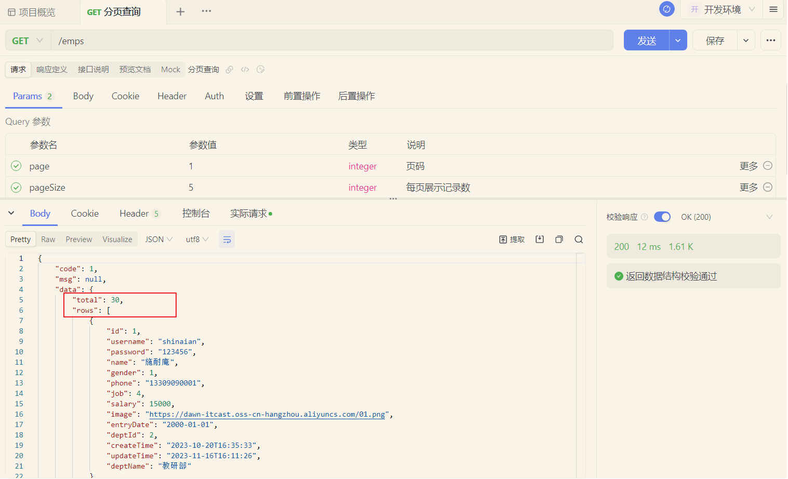
前后端联调
打开浏览器，测试后端功能接口：
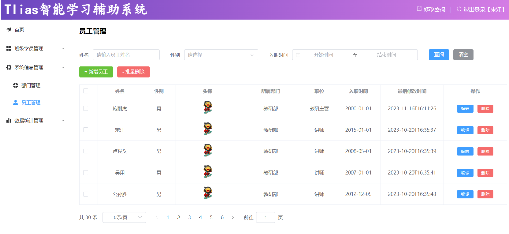
点击下面的页码，可以正常的查询出对应的数据 。
PageHelper分页插件
介绍
前面我们已经完了基础的分页查询，大家会发现：分页查询功能编写起来比较繁琐。 而分页查询的功能是非常常见的，我们查询员工信息需要分页查询，将来在做其他项目时，查询用户信息、订单信息、商品信息等等都是需要进行分页查询的。
而分页查询的思路、步骤是比较固定的。 在Mapper接口中定义两个方法执行两条不同的SQL语句：
- 查询总记录数
- 指定页码的数据列表
在Service当中，调用Mapper接口的两个方法，分别获取：总记录数、查询结果列表，然后在将获取的数据结果封装到PageBean对象中。
大家思考下：在未来开发其他项目，只要涉及到分页查询功能(例：订单、用户、支付、商品)，都必须按照以上操作完成功能开发
结论：原始方式的分页查询，存在着"步骤固定"、"代码频繁"的问题
解决方案：可以使用一些现成的分页插件完成。对于Mybatis来讲现在最主流的就是PageHelper。
PageHelper是第三方提供的Mybatis框架中的一款功能强大、方便易用的分页插件，支持任何形式的单标、多表的分页查询。
官网：https://pagehelper\.github\.io/
那接下来，我们可以对比一下，使用PageHelper分页插件进行分页 与 原始方式进行分页代码实现的上的差别。
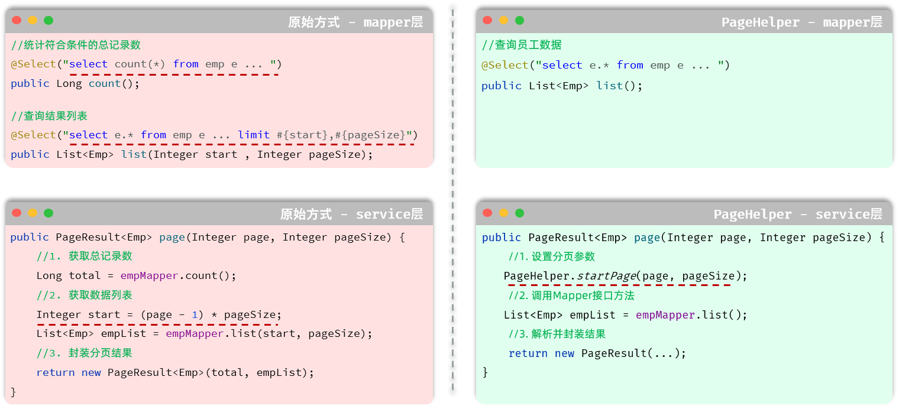
Mapper接口层：
原始的分页查询功能中，我们需要在Mapper接口中定义两条SQL语句。
PageHelper实现分页查询之后，只需要编写一条SQL语句，而且不需要考虑分页操作，就是一条正常的查询语句。
Service层：
需要根据页码、每页展示记录数，手动的计算起始索引。
无需手动计算起始索引，直接告诉PageHelper需要查询那一页的数据，每页展示多少条记录即可。
代码实现
当使用了PageHelper分页插件进行分页，就无需再Mapper中进行手动分页了。 在Mapper中我们只需要进行正常的列表查询即可。在Service层中，调用Mapper的方法之前设置分页参数，在调用Mapper方法执行查询之后，解析分页结果，并将结果封装到PageResult对象中返回。
1). 在pom.xml引入依赖
<!--分页插件PageHelper-->
<dependency>
<groupId>com.github.pagehelper</groupId>
<artifactId>pagehelper-spring-boot-starter</artifactId>
<version>1.4.7</version>
</dependency>
2). EmpMapper
/**
* 查询所有的员工及其对应的部门名称
*/
@Select("select e.*, d.name deptName from emp as e left join dept as d on e.dept_id = d.id")
public List<Emp> list();
3). EmpServiceImpl
@Override
public PageResult page(Integer page, Integer pageSize) {
//1. 设置分页参数
PageHelper.startPage(page,pageSize);
//2. 执行查询
List<Emp> empList = empMapper.list();
Page<Emp> p = (Page<Emp>) empList; 强制修改类型实现 使用类内部的功能接口
//3. 封装结果
return new PageResult(p.getTotal(), p.getResult());
}
功能测试
功能开发完成后，我们重启项目工程，打开Apifox，发起GET请求，访问 ：http://localhost:8080/emps?page\=1&pageSize\=5
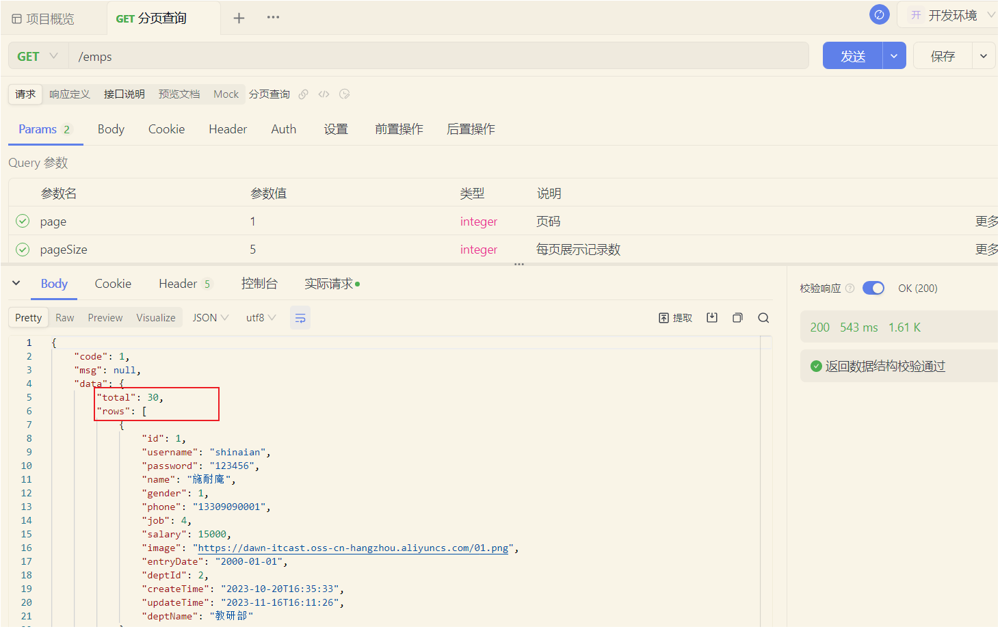
我们可以看到数据可以正常查询返回，是可以正常实现分页查询的。
实现机制
我们打开Idea的控制台，可以看到在进行分页查询时，输出的SQL语句。
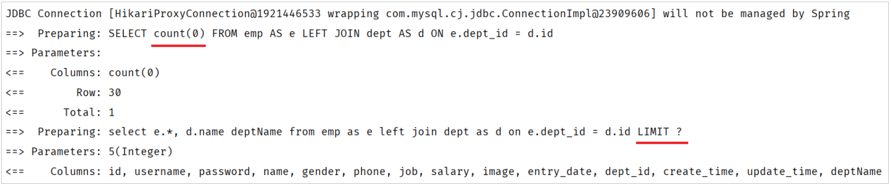
我们看到执行了两条SQL语句，而这两条SQL语句，其实是从我们在Mapper接口中定义的SQL演变而来的。
- 第一条SQL语句，用来查询总记录数。
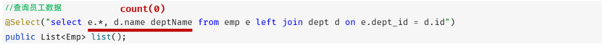
其实就是将我们编写的SQL语句进行的改造增强，将查询返回的字段列表替换成了 count(0) 来统计总记录数。
- 第二条SQL语句，用来进行分页查询，查询指定页码对应 的数据列表。
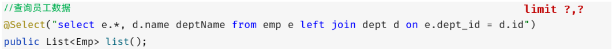
其实就是将我们编写的SQL语句进行的改造增强，在SQL语句之后拼接上了limit进行分页查询，而由于测试时查询的是第一页，起始索引是0，所以简写为limit ？。
而PageHelper在进行分页查询时，会执行上述两条SQL语句，并将查询到的总记录数，与数据列表封装到了 Page<Emp> 对象中，我们再获取查询结果时，只需要调用Page对象的方法就可以获取。]
注意：
- PageHelper实现分页查询时，SQL语句的结尾一定一定一定不要加分号(;).。
- PageHelper只会对紧跟在其后的第一条SQL语句进行分页处理。
条件分页查询
在 Service 层中直接使用 PaperHelper 就行
先设置
//1. 设置分页参数(PageHelper)
PageHelper.startPage(empQueryParam.getPage(), empQueryParam.getPageSize());
实现条件查询的时候 使用 <if> 标签就行 ;
完了分页查询后，下面我们需要在分页查询的基础上，添加条件。
需求
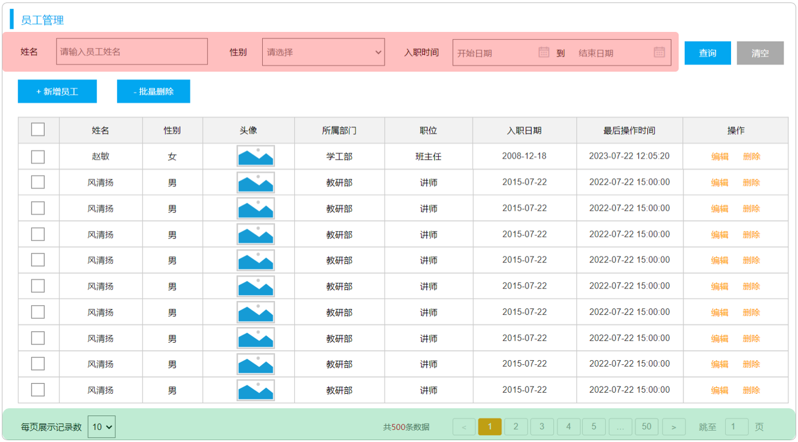
通过员工管理的页面原型我们可以看到，员工列表页面的查询，不仅仅需要考虑分页，还需要考虑查询条件。 分页查询我们已经实现 了，接下来，我们需要考虑在分页查询的基础上，再加上查询条件。
我们看到页面原型及需求中描述，搜索栏的搜索条件有三个，分别是：
- 姓名：模糊匹配
- 性别：精确匹配
- 入职日期：范围匹配
接口描述
参照接口文档中的 员工管理 -> 员工列表查询
思路分析
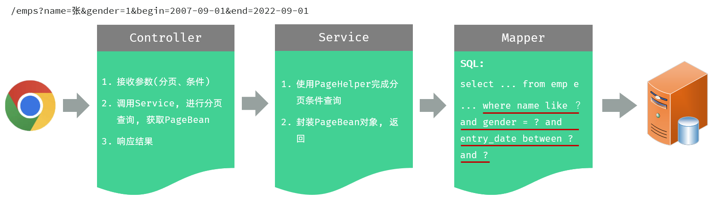
功能开发
通过查看接口文档：员工列表查询
请求路径：/emps
请求方式：GET
请求参数：
参数名称 | 是否必须 | 示例 | 备注 |
name | 否 | 张 | 姓名 |
gender | 否 | 1 | 性别 , 1 男 , 2 女 |
begin | 否 | 2010/1/1 | 范围匹配的开始时间(入职日期) |
end | 否 | 2020/1/1 | 范围匹配的结束时间(入职日期) |
page | 是 | 1 | 分页查询的页码，如果未指定，默认为1 |
pageSize | 是 | 10 | 分页查询的每页记录数，如果未指定，默认为10 |
在原有分页查询的代码基础上进行改造。
1). 在EmpController方法中通过多个方法形参，依次接收这几个参数
@Slf4j
@RestController
@RequestMapping("/emps")
public class EmpController {
@Autowired
private EmpService empService;
@GetMapping
public Result page(@RequestParam(defaultValue = "1") Integer page,
@RequestParam(defaultValue = "10") Integer pageSize,
String name, Integer gender,
@DateTimeFormat(pattern = "yyyy-MM-dd") LocalDate begin,
@DateTimeFormat(pattern = "yyyy-MM-dd") LocalDate end) {
log.info("查询请求参数： {}, {}, {}, {}, {}, {}", page, pageSize, name, gender, begin, end);
PageResult pageResult = empService.page(page, pageSize);
return Result.success(pageResult);
}
}
2). 修改EmpService及EmpServiceImpl中的代码逻辑
EmpService：
public interface EmpService {
/**
* 分页查询
*/
PageResult page(Integer page, Integer pageSize, String name, Integer gender, LocalDate begin, LocalDate end);
}
EmpServiceImpl:
/**
* 员工管理
*/
@Service
public class EmpServiceImpl implements EmpService {
@Autowired
private EmpMapper empMapper;
@Override
public PageResult page(Integer page, Integer pageSize, String name, Integer gender, LocalDate begin, LocalDate end) {
//1. 设置PageHelper分页参数
PageHelper.startPage(page, pageSize);
//2. 执行查询
List<Emp> empList = empMapper.list(name, gender, begin, end);
//3. 封装分页结果
Page<Emp> p = (Page<Emp>) empList;
return new PageResult(p.getTotal(), p.getResult());
}
}
3). 调整EmpMapper接口方法
@Mapper
public interface EmpMapper {
/**
* 查询所有的员工及其对应的部门名称
*/
public List<Emp> list(String name, Integer gender, LocalDate begin, LocalDate end);
}
由于SQL语句比较复杂，建议将SQL语句配置在XML映射文件中。
4). 新增Mapper映射文件EmpMapper.xml
<!--定义Mapper映射文件的约束和基本结构-->
<!DOCTYPE mapper
PUBLIC "-//mybatis.org//DTD Mapper 3.0//EN"
"http://mybatis.org/dtd/mybatis-3-mapper.dtd">
<mapper namespace="com.itheima.mapper.EmpMapper">
<select id="list" resultType="com.itheima.pojo.Emp">
select e.*, d.name deptName from emp as e left join dept as d on e.dept_id = d.id
where e.name like concat('%',#{name},'%')
and e.gender = #{gender}
and e.entry_date between #{begin} and #{end}
</select>
</mapper>
功能测试：
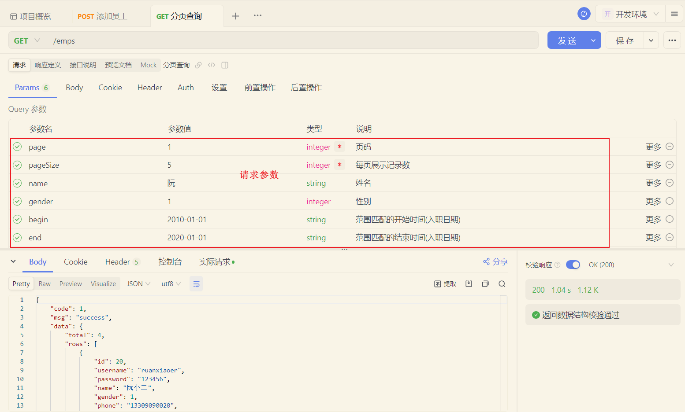
测试时，需要注意传递的查询条件，有些查询条件查不到数据的，因为数据库没有符合条件的记录。
程序优化1
在上述分页条件查询中，请求参数比较多，有6个，如下所示：
- 请求参数：/emps?name=张&gender=1&begin=2007-09-01&end=2022-09-01&page=1&pageSize=10
那我们在controller层方法中，接收请求参数的时候，直接在controller方法中声明这样6个参数即可，这样做，功能可以实现，但是不方便维护和管理。
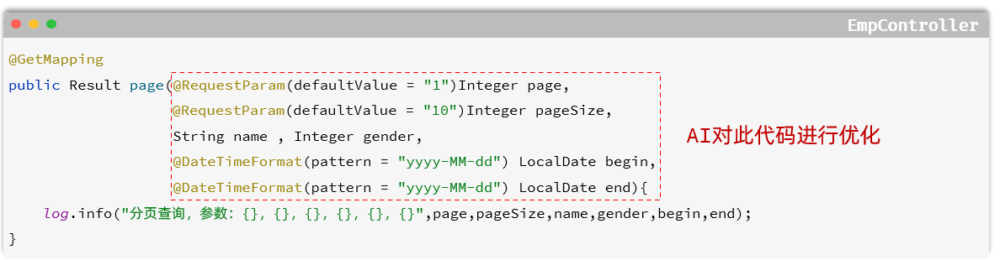
那接下来呢，我们就可以通过 通义零码 AI辅助工具，对这一块儿的代码进行优化。 具体操作如下：
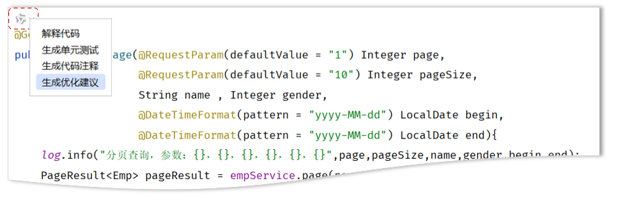
优化思路：定义一个实体类，来封装这几个请求参数。 【需要保证，前端传递的请求参数和实体类的属性名是一样的】
1). 定义实体类：EmpQueryParam
package com.itheima.pojo;
import lombok.Data;
import org.springframework.format.annotation.DateTimeFormat;
import java.time.LocalDate;
@Data
public class EmpQueryParam {
private Integer page = 1; //页码
private Integer pageSize = 10; //每页展示记录数
private String name; //姓名
private Integer gender; //性别
@DateTimeFormat(pattern = "yyyy-MM-dd")
private LocalDate begin; //入职开始时间
@DateTimeFormat(pattern = "yyyy-MM-dd")
private LocalDate end; //入职结束时间
}
2). EmpController接收请求参数
@GetMapping
public Result page(EmpQueryParam empQueryParam) {
log.info("查询请求参数： {}", empQueryParam);
PageResult pageResult = empService.page(empQueryParam);
return Result.success(pageResult);
}
3). 修改EmpService接口方法
public interface EmpService {
/**
* 分页查询
*/
//PageResult page(Integer page, Integer pageSize, String name, Integer gender, LocalDate begin, LocalDate end);
PageResult page(EmpQueryParam empQueryParam);
}
4). 修改EmpServiceImpl中的page方法
@Service
public class EmpServiceImpl implements EmpService {
@Autowired
private EmpMapper empMapper;
/*@Override
public PageResult page(Integer page, Integer pageSize, String name, Integer gender, LocalDate begin, LocalDate end) {
//1. 设置PageHelper分页参数
PageHelper.startPage(page, pageSize);
//2. 执行查询
List<Emp> empList = empMapper.list(name, gender, begin, end);
//3. 封装分页结果
Page<Emp> p = (Page<Emp>) empList;
return new PageResult(p.getTotal(), p.getResult());
}*/
public PageResult page(EmpQueryParam empQueryParam) {
//1. 设置PageHelper分页参数
PageHelper.startPage(empQueryParam.getPage(), empQueryParam.getPageSize());
//2. 执行查询
List<Emp> empList = empMapper.list(empQueryParam);
//3. 封装分页结果
Page<Emp> p = (Page<Emp>)empList;
return new PageResult(p.getTotal(), p.getResult());
}
}
5). 修改EmpMapper接口方法
@Mapper
public interface EmpMapper {
/**
* 查询所有的员工及其对应的部门名称
*/
// @Select("select e.*, d.name as deptName from emp e left join dept d on e.dept_id = d.id")
// public List<Emp> list(String name, Integer gender, LocalDate begin, LocalDate end);
/**
* 根据查询条件查询员工
*/
List<Emp> list(EmpQueryParam empQueryParam);
}
EmpMapper.xml 中的配置无需修改。
代码优化完毕之后，重新启动运行测试，依然正常运行：
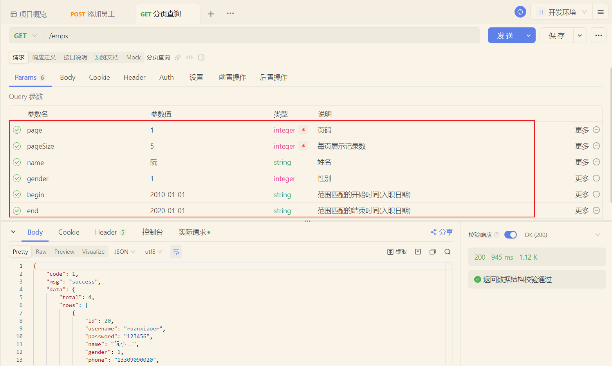
当我们在测试的时候，页码输入负数，查询是有问题的，查不到对应的数据了。
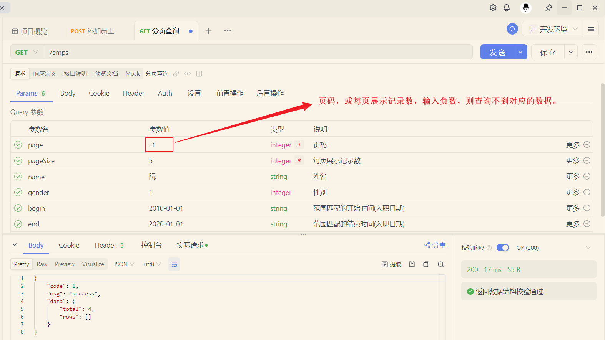
那其实在PageHelper中，我们可以通过合理化参数配置，来解决这个问题。直接在application.yml中，引入如下配置即可：
pagehelper:
reasonable: true
helper-dialect: mysql
reasonable：分页合理化参数，默认值为false。当该参数设置为true时，pageNum<=0时会查询第一页，pageNum>pages（超过总数时），会查询最后一页。默认false 时，直接根据参数进行查询。
测试如下：
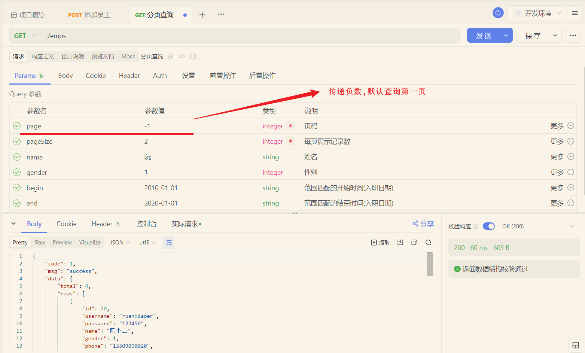
程序优化2
实现动态 SQL
当前，我们在查询的时候，Mapper映射配置文件中的SQL语句中，查询条件是写死的。 而我们在员工管理中，根据条件查询员工信息时，查询条件是可选的，可以输入也可以不输入。
- 如果只输入 姓名 这个查询条件，则SQL语句中只根据name字段查询，SQL如下：
select e.*, d.name deptName from emp as e left join dept as d on e.dept_id = d.id where e.name like concat('%',#{name},'%')；
- 如果只输入 性别 这个查询条件，则SQL语句中只根据gender字段查询，SQL如下：
select e.*, d.name deptName from emp as e left join dept as d on e.dept_id = d.id where e.gender = #{gender}；
- 如果输入 姓名 和 性别 这两个查询条件，则SQL语句中要根据name、gender两个字段查询，SQL如下：
select e.*, d.name deptName from emp as e left join dept as d on e.dept_id = d.id
where e.name like concat('%',#{name},'%') and e.gender = #{gender}；
我们看到，这个SQL语句不应该是写死的，而应该根据用户输入的条件的变化而变化。 那这里呢，就要通过Mybatis中的动态SQL来实现。
所谓****动态SQL，指的就是随着用户的输入或外部的条件的变化而变化的SQL语句。
具体的代码实现如下：
<!--定义Mapper映射文件的约束和基本结构-->
<!DOCTYPE mapper
PUBLIC "-//mybatis.org//DTD Mapper 3.0//EN"
"http://mybatis.org/dtd/mybatis-3-mapper.dtd">
<mapper namespace="com.itheima.mapper.EmpMapper">
<select id="list" resultType="com.itheima.pojo.Emp">
select e.*, d.name deptName from emp as e left join dept as d on e.dept_id = d.id
<where>
<if test="name != null and name != ''">
e.name like concat('%',#{name},'%')
</if>
<if test="gender != null">
and e.gender = #{gender}
</if>
<if test="begin != null and end != null">
and e.entry_date between #{begin} and #{end}
</if>
</where>
</select>
</mapper>
在这里呢，我们用到了两个动态SQL的标签：<if>``<``where``>。 这两个标签的具体作用如下：
两个均为 双标签 :
<if>：判断条件是否成立，如果条件为true，则拼接SQL。
对于字符串的判断 :
要针对 name 字符串的判定 选择 ;
需要使用两种属性 : name != null and name != '' 空字符串判定 两个条件实现 判定这个条件 ;
and , or 连接词直接选择就可;
内部创建的模式 类型 :
<if test = " boolean字段 "> ;
<where>：根据查询条件，来生成where关键字，并会自动去除条件前面多余的and或or。
代码优化完毕后，重新启动服务，测试如下：
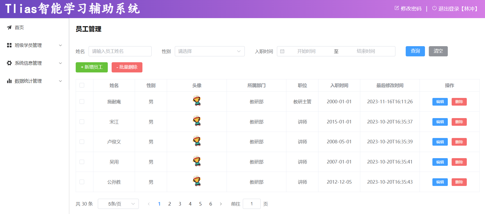
没有输入任何查询条件时，运行日志如下：
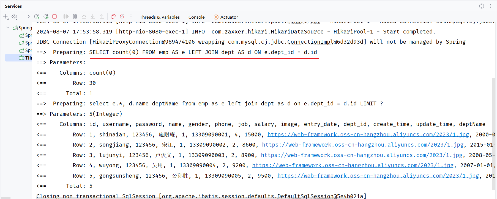
当我们输入姓名和性别时 :
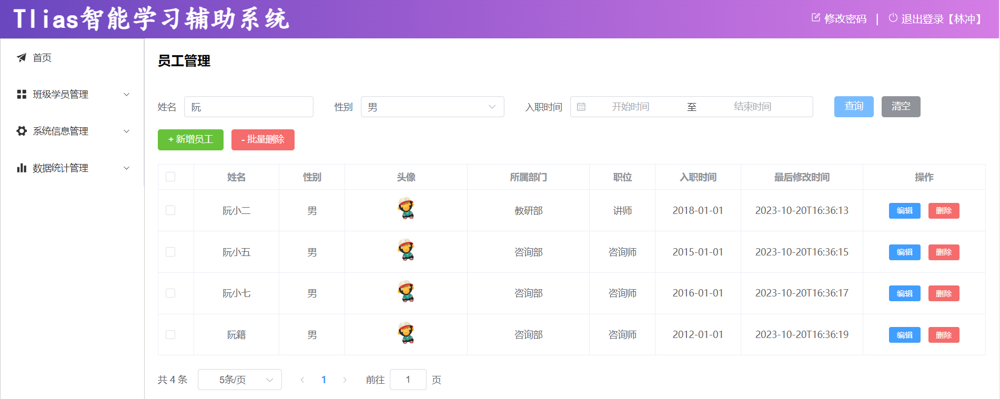
运行日志如下：
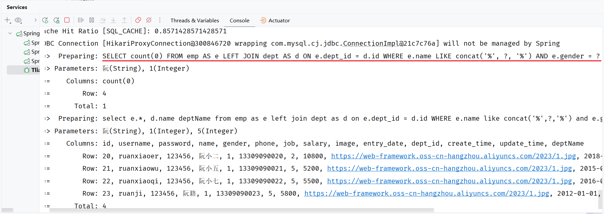
我们可以看到，当我们输入不同的搜索条件时，会动态的根据查询条件，动态拼接SQL语句。
常见的500报错 :
此处的姓名使用 模糊化处理的时候 :
'%#{name}%' -> '%?%' 在mybatis 内部实现预编译语句的时候 此时的 ? 就不是占位符 ;
会出现 形参 和 传参的 数量不能保持一致 ;直接报出 500 的后端服务器报错;
使用 $ 拼接字符 吗 : no, 不安全 , 性能还差;
'%${name}%'
解决方法 : 使用mysql内部的字符串连接函数 :
concat( '%' . '%' ,'男' ) --- > '%%男' 可以在编译的时候实现字符串的拼接 ;
内部实现 name 的模糊化查询的时候 使用 concat( '%' , '#{name}' , '%' ) ;
新增员工(C , creat , post 请求入门)
包含集合类的简单新增
设置包装类 , 在 Controller 中直接使用包装类包装 post 中 JSON 对象 ;
在 Service 层中 , 先将非集合类直接包装后 获取到 主表的 id ( 涉及到@Options注释 ) @Options(useGeneratedKeys = true, keyProperty = "id")
获取到 id 后直接对保存对象中的集合属性 使用 forEach 每个赋值 id 后 ,直接使用mapper方法包装后,
直接上传到 处理 附表中集合信息的 mapper 中处理 ;
需求
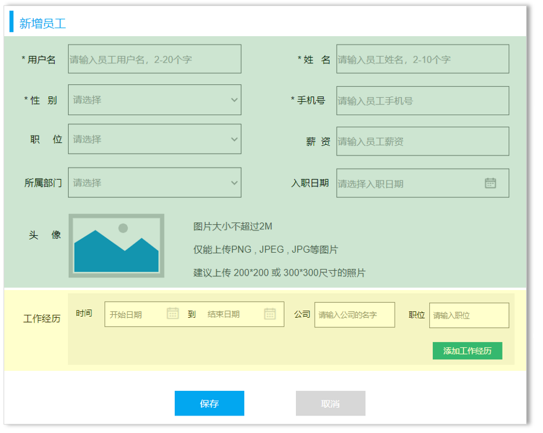
在新增员工的时候，在表单中，我们既要录入员工的基本信息，又要录入员工的工作经历信息。 员工基本信息，对应的表结构是 emp表，员工工作经历信息，对应的表结构是 emp_expr 表，所以这里我们要操作两张表，往两张表中保存数据。
SQL 思路 : 基础信息 传入一次封装类 , 基本信息存入后获取到 id ,
后续实现的插入 , 修改的新旧字段通过连接到 id 号实现 增删改查 ;
接口描述
参照提供的接口文档中 员工管理 -> 添加员工 接口的描述。
思路分析
新增员工的具体的流程：
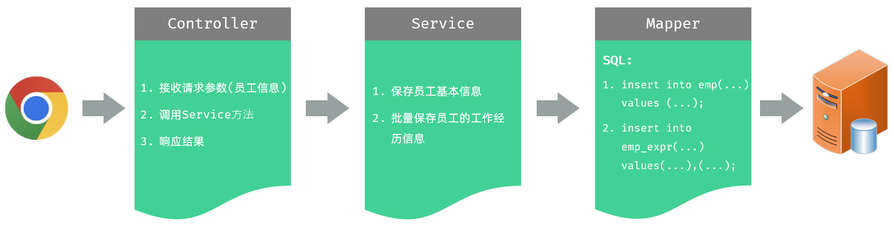
接口文档规定：
请求路径：/emps
请求方式：POST
请求参数：Json格式数据
响应数据：Json格式数据
**问题1：**如何限定请求方式是POST？
@PostMapping**问题2：**怎么在controller中接收json格式的请求参数？
@RequestBody
功能开发
准备工作
准备EmpExprMapper接口及映射配置文件EmpExprMapper.xml，并准备实体类接收前端传递的json格式的请求参数。
1). EmpExprMapper接口
@Mapper
public interface EmpExprMapper {
}
2). EmpExprMapper.xml 配置文件
<?xml version="1.0" encoding="UTF-8" ?>
<!DOCTYPE mapper
PUBLIC "-//mybatis.org//DTD Mapper 3.0//EN"
"http://mybatis.org/dtd/mybatis-3-mapper.dtd">
<mapper namespace="com.itheima.mapper.EmpExprMapper">
</mapper>
3). 需要在 Emp 员工实体类中增加属性 exprList 来封装工作经历数据。 最终完整代码如下：
@Data
public class Emp {
private Integer id; //ID,主键
private String username; //用户名
private String password; //密码
private String name; //姓名
private Integer gender; //性别, 1:男, 2:女
private String phone; //手机号
private Integer job; //职位, 1:班主任,2:讲师,3:学工主管,4:教研主管,5:咨询师
private Integer salary; //薪资
private String image; //头像
private LocalDate entryDate; //入职日期
private Integer deptId; //关联的部门ID
private LocalDateTime createTime; //创建时间
private LocalDateTime updateTime; //修改时间
//封装部门名称数
private String deptName; //部门名称
//封装员工工作经历信息
private List<EmpExpr> exprList;
}
保存员工基本信息
1). EmpController
在 EmpController 中增加save方法。
/**
* 添加员工
*/
@PostMapping
public Result save(@RequestBody Emp emp){
log.info("请求参数emp: {}", emp);
empService.save(emp);
return Result.success();
}
2). EmpService & EmpServiceImpl
在 EmpService 中增加 save 方法
/**
* 添加员工
* @param emp
*/
void save(Emp emp);
在 EmpServiceImpl 中增加save方法 , 实现接口中的save方法
@Override
public void save(Emp emp) {
//1.补全基础属性 (补足时间的基础信息项) ;
emp.setCreateTime(LocalDateTime.now());
emp.setUpdateTime(LocalDateTime.now());
//2.保存员工基本信息
empMapper.insert(emp);
//3. 保存员工的工作经历信息 - 批量 (稍后完成)
}
3). EmpMapper
在 EmpMapper 中增加insert方法，新增员工的基本信息。
/**
* 新增员工数据
*/
@Options(useGeneratedKeys = true, keyProperty = "id")
@Insert("insert into emp(username, name, gender, phone, job, salary, image, entry_date, dept_id, create_time, update_time) " +
"values (#{username},#{name},#{gender},#{phone},#{job},#{salary},#{image},#{entryDate},#{deptId},#{createTime},#{updateTime})")
void insert(Emp emp);
主键返回：@Options(useGeneratedKeys = true, keyProperty = "id")
由于稍后，我们在保存工作经历信息的时候，需要记录是哪位员工的工作经历。 所以，保存完员工信息之后，是需要获取到员工的ID的，那这里就需要通过Mybatis中提供的主键返回功能来获取。
批量保存工作经历
分析
一个员工，是可以有多段工作经历的，所以在页面上将来用户录入员工信息时，可以自己根据需要添加多段工作经历。页面原型展示如下：
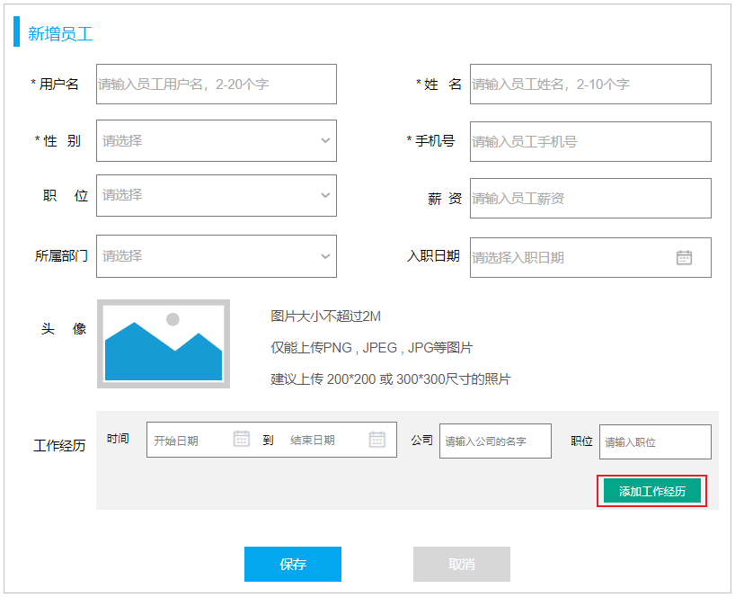
那如果员工只有一段工作经历，我们就需要往工作经历表中保存一条记录。 执行的SQL如下：
如果员工有两段工作经历，我们就需要往工作经历表中保存两条记录。执行的SQL如下：

如果员工有三段工作经历，我们就需要往工作经历表中保存三条记录。执行的SQL如下：
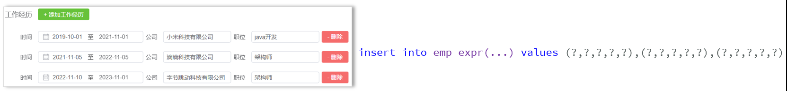
所以，这里最终我们需要执行的是批量插入数据的insert语句。
实现
1). EmpServiceImpl
完善save方法中保存员工信息的逻辑。完整逻辑如下：
@Override
public void save(Emp emp) {
//1.补全基础属性
emp.setCreateTime(LocalDateTime.now());
emp.setUpdateTime(LocalDateTime.now());
//2.保存员工基本信息
empMapper.insert(emp);
//3. 保存员工的工作经历信息 - 批量
Integer empId = emp.getId();
List<EmpExpr> exprList = emp.getExprList();
if(!CollectionUtils.isEmpty(exprList)){
exprList.forEach(empExpr -> empExpr.setEmpId(empId));
empExprMapper.insertBatch(exprList);
}
}
2). EmpExprMapper
@Mapper
public interface EmpExprMapper {
/**
* 批量插入员工工作经历信息
*/
public void insertBatch(List<EmpExpr> exprList);
}
3). EmpExprMapper.xml
<?xml version="1.0" encoding="UTF-8" ?>
<!DOCTYPE mapper
PUBLIC "-//mybatis.org//DTD Mapper 3.0//EN"
"http://mybatis.org/dtd/mybatis-3-mapper.dtd">
<mapper namespace="com.itheima.mapper.EmpExprMapper">
<!--批量插入员工工作经历信息-->
<insert id="insertBatch">
insert into emp_expr (emp_id, begin, end, company, job) values
<foreach collection="exprList" item="expr" separator=",">
(#{expr.empId}, #{expr.begin}, #{expr.end}, #{expr.company}, #{expr.job})
</foreach>
</insert>
</mapper>
实现批量传入数据 , 要使用 <foreach> 标签 ; 实现多次输入输出填充数据 ; 双标签
这里用到Mybatis中的动态SQL里提供的 <foreach> 标签，改标签的作用，是用来遍历循环，常见的属性说明：
- collection：集合名称
- item：内部遍历出的每一个对象的名字 类似 : for( auto it : ARR) 和 it 类似 ;
- separator：每一次遍历使用的分隔符
- open：遍历开始前拼接的片段 //此处可以直接省略前面的values (建议直接使用 values, 全部的SQL语言中实现赋值的操作方式 : 内部都是使用 values 实现的 , vaule(- / -s)) 只对 mysql有用 ;
- close：遍历结束后拼接的片段 ; ; 后续可以直接拼接使用 " ; " ; 实现 SQL语句的结束;
这里一般都不需要自己去补上这里的 " ; " mybatis内部实现的生态很牛了 ;
上述的属性，是可选的，并不是所有的都是必须的。 可以自己根据实际需求，来指定对应的属性。
Mybatis 内部实现的 主键返回 功能 :
实现在 Mapper 层 以注释的形式 :
@Options() : 内部实现useGeneratedKeys = true , KeyProperty ="id" 实现获取到对象生成的主键 , 获取到的主键计算为 "id" ; 实现在 Service 层 使用 id 作为唯一表示实现定位 ;
( 当需要实现的内部类使用id 参数 的时候 需要主键返回 ) 参考下面实现 自动化 主键返回 ;
在需要实现的insert 方法前面 添加@Options → 插入后自动赋值到id属性 → Service层直接获取使用
实现类的内部创建属性3要有 id 字段 ;
浪费了半小时 成就 :
在创建出的Controller层中 使用 RequestBody 中实现的对象就已经全部映射了 JSON 中参数的信息 ;
后续实现 对内部的参数进行参数 修改 传值 ;
然后 将获取到的id 传回来 创建对象, 最后再将对象传回数据库 , 这是 insert 操作 , 是往数据库中储存数值 ;
功能测试
代码开发完成后，重启服务器，打开 Apifox 发送 POST 请求，请求路径：http://localhost:8080/emps

请求完毕后，可以打开idea的控制台看到控制台输出的日志：
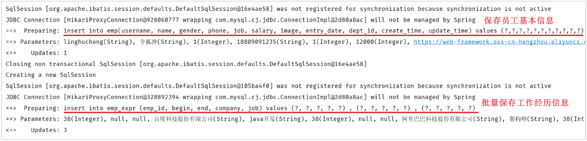
前后端联调
功能测试通过后，我们再进行通过打开浏览器，测试后端功能接口：
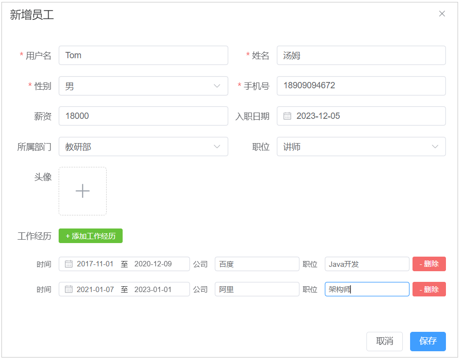
点击保存之后，可以看到列表中已经展示出了这条数据。
原因分析:
接下来我们就需要来分析一下具体是什么原因导致的日志没有成功的记录。
- 在执行
save方法时开启了一个事务 - 当执行
empLogService.insertLog操作时，ipronsertLog设置的事务传播行是默认值REQUIRED，表示有事务就加入，没有则新建事务 - 此时：
save和insertLog操作使用了同一个事务，同一个事务中的多个操作，要么同时成功，要么同时失败，所以当异常发生时进行事务回滚，就会回滚save和insertLog操作
删除员工(D, delete)
需求
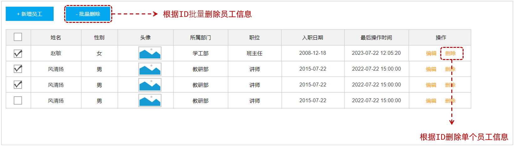
当我们勾选列表前面的复选框，然后点击 "批量删除" 按钮，就可以将这一批次的员工信息删除掉了。也可以只勾选一个复选框，仅删除一个员工信息。
问题：我们需要开发两个功能接口吗？一个删除单个员工，一个删除多个员工
答案：不需要。 只需要开发一个功能接口即可（删除多个员工包含只删除一个员工）
接口文档
参照资料中提供的接口文档，查看 员工管理 -> 删除员工接口的描述。
思路分析
功能开发
Controller接收参数
在 EmpController 中增加如下方法 delete ，来执行批量删除员工的操作。
方式一：在Controller方法中通过数组来接收
多个参数，默认可以将其封装到一个数组中，需要保证前端传递的参数名 与 方法形参名称保持一致。
/**
* 批量删除员工
*/
@DeleteMapping
public Result delete(Integer[] ids){
log.info("批量删除部门: ids={} ", Arrays.asList(ids));
return Result.success();
}
**方式二：**在Controller方法中通过集合来接收
也可以将其封装到一个List<Integer> 集合中，如果要将其封装到一个集合中，需要在集合前面加上 @RequestParam 注解。
/**
* 批量删除员工
*/
@DeleteMapping吗
public Result delete(@RequestParam List<Integer> ids){
log.info("批量删除部门: ids={} ", ids);
empService.deleteByIds(ids);
return Result.success();
}
两种方式，选择其中一种就可以，我们一般推荐选择集合，因为基于集合操作其中的元素会更加方便。
Service
1). 在接口中 EmpService 中定义接口方法 deleteByIds
/**
* 批量删除员工
*/
void deleteByIds(List<Integer> ids);
2). 在实现类 EmpServiceImpl 中实现接口方法 deleteByIds
在删除员工信息时，既需要删除 emp 表中的员工基本信息，还需要删除 emp_expr 表中员工的工作经历信息
@Transactional
@Override
public void deleteByIds(List<Integer> ids) {
//1. 根据ID批量删除员工基本信息
empMapper.deleteByIds(ids);
//2. 根据员工的ID批量删除员工的工作经历信息
empExprMapper.deleteByEmpIds(ids);
}
由于删除员工信息，既要删除员工基本信息，又要删除工作经历信息，操作多次数据库的删除，所以需要进行事务控制。
Mapper
逻辑外键 需要的时候到了
1). 在 EmpMapper 接口中增加 deleteByIds 方法实现批量删除员工基本信息
/**
* 批量删除员工信息
*/
void deleteByIds(List<Integer> ids);
2). 在 EmpMapper.xml 配置文件中, 配置对应的SQL语句
<!--批量删除员工信息-->
<delete id="deleteByIds">
delete from emp where id in
<foreach collection="ids" item="id" open="(" close=")" separator=",">
#{id}
</foreach>
</delete>
3). 在 EmpExprMapper 接口中增加 deleteByEmpIds 方法实现根据员工ID批量删除员工的工作经历信息
/**
* 根据员工的ID批量删除工作经历信息
*/
void deleteByEmpIds(List<Integer> empIds);
4). 在 EmpExprMapper.xml 配置文件中, 配置对应的SQL语句
<!--根据员工的ID批量删除工作经历信息-->
<delete id="deleteByEmpIds">
delete from emp_expr where emp_id in
<foreach collection="empIds" item="empId" open="(" close=")" separator=",">
#{empId}
</foreach>
</delete>
功能测试
功能开发完成后，重启项目工程，打开 Apifox，发起DELETE请求：
控制台SQL语句：
前后端联调
打开浏览器，测试后端功能接口：
查询员工(R , read )
接口描述
参照资料中提供的接口文档，查看 员工管理 -> 根据ID查询接口的描述。
思路
在查询回显时，既需要查询出员工的基本信息，又需要查询出该员工的工作经历信息。
我们可以先通过一条SQL语句，查询出指定员工的基本信息，及其员工的工作经历信息。SQL如下：
select e.*,
ee.id ee_id,
ee.begin ee_begin,
ee.end ee_end,
ee.company ee_company,
ee.job ee_job
from emp e left join emp_expr ee on e.id = ee.emp_id where e.id = 39;
具体的实现思路如下：
代码实现
1). EmpController 添加 getInfo 用来根据ID查询员工数据，用于页面回显
/**
* 查询回显
*/
@GetMapping("/{id}")
public Result getInfo(@PathVariable Integer id){
log.info("根据id查询员工的详细信息");
Emp emp = empService.getInfo(id);
return Result.success(emp);
}
2). EmpService 接口中增加 getInfo 方法
/**
* 根据ID查询员工的详细信息
*/
Emp getInfo(Integer id);
3). EmpServiceImpl 实现类中实现 `getInfo` 方法
@Override
public Emp getInfo(Integer id) {
return empMapper.getById(id);
}
4). EmpMapper 接口中增加 getById 方法
/**
* 根据ID查询员工详细信息
*/
Emp getById(Integer id);
5). EmpMapper.xml 配置文件中定义对应的SQL
<!--自定义结果集ResultMap-->
<resultMap id="empResultMap" type="com.itheima.pojo.Emp">
<id column="id" property="id" />
<result column="username" property="username" />
<result column="password" property="password" />
<result column="name" property="name" />
<result column="gender" property="gender" />
<result column="phone" property="phone" />
<result column="job" property="job" />
<result column="salary" property="salary" />
<result column="image" property="image" />
<result column="entry_date" property="entryDate" />
<result column="dept_id" property="deptId" />
<result column="create_time" property="createTime" />
<result column="update_time" property="updateTime" />
<!--封装exprList-->
<collection property="exprList" ofType="com.itheima.pojo.EmpExpr">
<id column="ee_id" property="id"/>
<result column="ee_company" property="company"/>
<result column="ee_job" property="job"/>
<result column="ee_begin" property="begin"/>
<result column="ee_end" property="end"/>
<result column="ee_empid" property="empId"/>
</collection>
</resultMap>
<!--根据ID查询员工的详细信息-->
<select id="getById" resultMap="empResultMap">
select e.*,
ee.id ee_id,
ee.emp_id ee_empid,
ee.begin ee_begin,
ee.end ee_end,
ee.company ee_company,
ee.job ee_job
from emp e left join emp_expr ee on e.id = ee.emp_id
where e.id = #{id}
</select>
内部设置的type : 直接使用 type 实现泛型 ;
一般情况下 直接使用 mapper 中自带的 resultype 直接分装就行 ; 下面是特殊情况 ;
在这种一对多的查询中，我们要想成功的封装的结果，一定需要手动的基于 <resultMap> 来进行封装结果。
需要按照 Emp对象 搜索的到的全部元素 一个一个封装 , empResultMap 内部实现字段封装的字段名 ;
column : 字段名 , property : 属性名 ;
Mybatis中封装查询结果，什么时候用 resultType，什么时候用resultMap ？
- 如果查询返回的字段名与实体的属性名可以直接对应上，用resultType 。
- 如果查询返回的字段名与实体的属性名对应不上，或实体属性比较复杂，可以通过resultMap手动封装 。
- select 标签中定义 一下 方法id 和 需要传回的数据类型 ; 传回的数据类型一旦设计多表结构 , 需要自己手动去实现 封装结果;
<id> vs <result> 的核心区别
标签 作用 是否必须 额外功能
<id> 映射主键字段 可选 标识这是一个唯一标识，帮助 MyBatis 优化对象比较和缓存
<result> 映射普通字段 可选 只负责普通字段映射
<collection> 标签属性详解
属性 作用 示例
property 主对象中存放子集合的属性名 property="exprList" -- 属性名;
ofType 集合中元素的 Java 类型（全限定类名） ofType="com.itheima.pojo.EmpExpr" -- type ;
column 用于嵌套查询的列（配合 select 属性） column="emp_id"
select 引用另一个查询的 id（分步查询） select="com.xxx.mapper.xxx.selectByEmpId"
javaType 集合的类型（默认 ArrayList，可不写） javaType="ArrayList"
fetchType 懒加载策略 fetchType="lazy" 或 eager
Apifox测试
重新启动服务，基于Apifox进行接口测试。
前后端联调测试
打开浏览器，进行前后端联调测试。
修改员工(U , update )
查询回显之后，就可以在页面上修改员工的信息了。
- 当用户修改完数据之后，点击保存按钮，就需要将数据提交到服务端，然后服务端需要将修改后的数据更新到数据库中 。
- 而此次更新的时候，既需要更新员工的基本信息； 又需要更新员工的工作经历信息 。
接口文档
参照资料中提供的接口文档，查看 员工管理 -> 修改员工接口的描述。
实现思路
代码实现
1). EmpController 增加 update 方法接收请求参数，响应数据
/**
* 更新员工信息
*/
@PutMapping
public Result update(@RequestBody Emp emp){
log.info("修改员工信息, {}", emp);
empService.update(emp);
return Result.success();
}
2). EmpService 接口增加 update 方法
/**
* 更新员工信息
* @param emp
*/
void update(Emp emp);
3). EmpServiceImpl实现类实现 update 方法
@Transactional
@Override
public void update(Emp emp) {
//1. 根据ID更新员工基本信息
emp.setUpdateTime(LocalDateTime.now());
empMapper.updateById(emp);
//2. 根据员工ID删除员工的工作经历信息 【删除老的】
empExprMapper.deleteByEmpIds(Arrays.asList(emp.getId()));
//3. 新增员工的工作经历数据 【新增新的】
Integer empId = emp.getId();
List<EmpExpr> exprList = emp.getExprList();
if(!CollectionUtils.isEmpty(exprList)){
exprList.forEach(empExpr -> empExpr.setEmpId(empId));
empExprMapper.insertBatch(exprList);
}
}
4). EmpMapper 接口中增加 updateById 方法
/**
* 更新员工基本信息
*/
void updateById(Emp emp);
5). EmpMapper.xml 配置文件中定义对应的SQL语句，基于动态SQL更新员工信息
<!--根据ID更新员工信息-->
<update id="updateById">
update emp
<set>
<if test="username != null and username != ''">username = #{username},</if>
<if test="password != null and password != ''">password = #{password},</if>
<if test="name != null and name != ''">name = #{name},</if>
<if test="gender != null">gender = #{gender},</if>
<if test="phone != null and phone != ''">phone = #{phone},</if>
<if test="job != null">job = #{job},</if>
<if test="salary != null">salary = #{salary},</if>
<if test="image != null and image != ''">image = #{image},</if>
<if test="entryDate != null">entry_date = #{entryDate},</if>
<if test="deptId != null">dept_id = #{deptId},</if>
<if test="updateTime != null">update_time = #{updateTime},</if>
</set>
where id = #{id}
</update>
编写的 xml 文件 内部 使用 了<set> 标签的 功效 : 自动实现 prefix = "set" , 自动删除结尾不需要的 逗号 ;'
Apifox测试
重新启动服务，打开 Apifox 进行接口测试。
前后端联调

点击保存之后，查看更新后的数据。
异常处理
问题分析
当我们在修改部门数据的时候，如果输入一个在数据库表中已经存在的手机号，点击保存按钮之后，前端提示了错误信息，但是返回的结果并不是统一的响应结果，而是框架默认返回的错误结果 。
状态码为500，表示服务器端异常，我们打开idea，来看一下，服务器端出了什么问题。
上述错误信息的含义是，emp员工表的phone手机号字段的值重复了，因为在数据库表emp中已经有了13309090027这个手机号了，我们之前设计这张表时，为phone字段建议了唯一约束，所以该字段的值是不能重复的。
而当我们再将该员工的手机号也设置为 13309090027，就违反了唯一约束，此时就会报错。
我们来看一下出现异常之后，最终服务端给前端响应回来的数据长什么样。
响应回来的数据是一个JSON格式的数据。但这种JSON格式的数据还是我们开发规范当中所提到的统一响应结果Result吗？显然并不是。由于返回的数据不符合开发规范，所以前端并不能解析出响应的JSON数据 。
接下来我们需要思考的是出现异常之后，当前案例项目的异常是怎么处理的？ 答案：没有做任何的异常处理
当我们没有做任何的异常处理时，我们三层架构处理异常的方案：
- Mapper接口在操作数据库的时候出错了，此时异常会往上抛(谁调用Mapper就抛给谁)，会抛给service。
- service 中也存在异常了，会抛给controller。
- 而在controller当中，我们也没有做任何的异常处理，所以最终异常会再往上抛。最终抛给框架之后，框架就会返回一个JSON格式的数据，里面封装的就是错误的信息，但是框架返回的JSON格式的数据并不符合我们的开发规范。
解决方案
那么在三层构架项目中，出现了异常，该如何处理?
- 方案一：在所有Controller的所有方法中进行try…catch处理
缺点：代码臃肿（不推荐）
- **方案二：**全局异常处理器
好处：简单、优雅（推荐）
全局异常处理器
我们该怎么样定义全局异常处理器？
- 定义全局异常处理器非常简单，就是定义一个类，在类上加上一个注解@RestControllerAdvice，加上这个注解就代表我们定义了一个全局异常处理器。
- 在全局异常处理器当中，需要定义一个方法来捕获异常，在这个方法上需要加上注解@ExceptionHandler。通过@ExceptionHandler注解当中的value属性来指定我们要捕获的是哪一类型的异常。
@RestControllerAdvice
public class GlobalExceptionHandler {
//处理异常
@ExceptionHandler
public Result ex(Exception e){//方法形参中指定能够处理的异常类型
e.printStackTrace();//打印堆栈中的异常信息
//捕获到异常之后，响应一个标准的Result
return Result.error("对不起,操作失败,请联系管理员");
}
}
@RestControllerAdvice = @ControllerAdvice + @ResponseBody
处理异常的方法返回值会转换为json后再响应给前端
重新启动SpringBoot服务，打开浏览器，再来测试一下 修改员工 这个操作，我们依然设置已存在的 13309090027这个手机号：
此时，我们可以看到，出现异常之后，异常已经被全局异常处理器捕获了。然后返回的错误信息，被前端程序正常解析，然后提示出了对应的错误提示信息。
以上就是全局异常处理器的使用，主要涉及到两个注解：
- @RestControllerAdvice //表示当前类为全局异常处理器
- @ExceptionHandler //指定可以捕获哪种类型的异常进行处理
具体处理方法 :
异常抛出后 的处理层 方面 :
会从下向上 实现异常处理 , 下面的异常处理最后都会合并 到 Exception e) 中去处理 ;
举个例子 : 实现唯一性 的报错处理 ;
@ExceptionHandler
public Result handleDuplicateKeyException(DuplicateKeyException e){
log.error("程序出错啦~", e);
String message = e.getMessage();
int i = message.indexOf("Duplicate entry");
String errMsg = message.substring(i);
String[] arr = errMsg.split(" ");
return Result.error( arr[2] + " 已存在");
}
内部实现 流程 :
message 内容（简化）：
".........Duplicate entry 'zhangsan' for key 'emp.username'........"
↑
i = 84（假设是这个位置）
errMsg = "Duplicate entry 'zhangsan' for key 'emp.username'"
arr[0] = "Duplicate"
arr[1] = "entry"
arr[2] = "'zhangsan'"
arr[3] = "for"
arr[4] = "key"
arr[5] = "'emp.username'"
return Result.error( arr[2] + " 已存在");
员工信息统计
员工管理的增删改查功能我们已开发完成，接下来，我们再来完成员工信息统计的接口开发。 对于这些图形报表的开发，其实呢，都是基于现成的一些图形报表的组件开发的，比如：Echarts、HighCharts等。
而报表的制作，主要是前端人员开发，引入对应的组件（比如：ECharts）即可。 服务端开发人员仅为其提供数据即可。
官网：https://echarts\.apache\.org/zh/index\.html
职位统计
需求
对于这类的图形报表，服务端要做的，就是为其提供数据即可。 我们可以通过官方的示例，看到提供的数据其实就是X轴展示的信息，和对应的数据。
接口描述
参照资料中提供的接口文档，查看 数据统计 -> 员工职位统计接口的描述。
代码实现
1). 定义****封装结果对象JobOption
在 com.itheima.pojo 包中定义实体类 JobOption
package com.itheima.pojo;
import lombok.AllArgsConstructor;
import lombok.Data;
import lombok.NoArgsConstructor;
import java.util.List;
@Data
@NoArgsConstructor
@AllArgsConstructor
public class JobOption {
private List jobList;
private List dataList;
}
1). 定义ReportController，并添加**方法。**
@Slf4j
@RequestMapping("/report")
@RestController
public class ReportController {
@Autowired
private ReportService reportService;
/**
* 统计各个职位的员工人数
*/
@GetMapping("/empJobData")
public Result getEmpJobData(){
log.info("统计各个职位的员工人数");
JobOption jobOption = reportService.getEmpJobData();
return Result.success(jobOption);
}
}
2). 定义ReportService接口，并添加接口方法。
public interface ReportService {
/**
* 统计各个职位的员工人数
* @return
*/
JobOption getEmpJobData();
}
3). 定义ReportServiceImpl实现类，并实现方法
@Service
public class ReportServiceImpl implements ReportService {
@Autowired
private EmpMapper empMapper;
@Override
public JobOption getEmpJobData() {
List<Map<String,Object>> list = empMapper.countEmpJobData();
List<Object> jobList = list.stream().map(dataMap -> dataMap.get("pos")).toList();
List<Object> dataList = list.stream().map(dataMap -> dataMap.get("total")).toList();
return new JobOption(jobList, dataList);
}
}
4). 定义EmpMapper 接口
统计的是员工的信息，所以需要操作的是员工表。 所以代码我们就写在 EmpMapper 接口中即可。
/**
* 统计各个职位的员工人数
*/
@MapKey("pos")
List<Map<String,Object>> countEmpJobData();
如果查询的记录往Map中封装，可以通过@MapKey注解指定返回的map中的唯一标识是那个字段。【也可以不指定】
5). 定义EmpMapper.xml
<!-- 统计各个职位的员工人数 -->
<select id="countEmpJobData" resultType="java.util.Map">
select
(case job when 1 then '班主任'
when 2 then '讲师'
when 3 then '学工主管'
when 4 then '教研主管'
when 5 then '咨询师'
else '其他' end) pos,
count(*) total
from emp group by job
order by total
</select>
第1步：FROM emp
读取 emp 表的所有数据
第2步：GROUP BY job
按照 job 字段的原始数值（1,2,3,4,5,6...）进行分组
所有 job=1 的行被分到一组
所有 job=2 的行被分到一组
所有 job=3 的行被分到一组
以此类推...
第3步：SELECT 计算
在每个分组内部，执行 CASE 语句
job=1 的那一组 → 全部变成 '班主任'
job=2 的那一组 → 全部变成 '讲师'
job=6 的那一组 → 全部变成 '其他'
第4步：COUNT(*)
统计每个分组有多少行数据
第5步：返回结果
每个分组输出一行，包含：转换后的职位名称 + 统计数字
case流程控制函数：
一般看到多的 分的条件使用 set , 简单判断一下 男女 直接使用 <if> 标签就行 ;
- 语法一：case when cond1 then res1 [ when cond2 then res2 ] else res end ; 需要使用 end 结束;
- 含义：如果 cond1 成立， 取 res1。 如果 cond2 成立，取 res2。 如果前面的条件都不成立，则取 res。
- 语法二（仅适用于等值匹配）：case expr when val1 then res1 [ when val2 then res2 ] else res end ;
- 含义：如果 expr 的值为 val1 ， 取 res1。 如果 expr 的值为 val2 ，取 res2。 如果前面的条件都不成立，则取 res。
case job when 1 then "" end == case when job=1 then "" end ;
创建出对应 生成的 List , 创建一个 dataMap后获取到 字段名 -> value数值之后创建出 列表 ;
按照返回值输出 ;
List<Map<String,Object>> list = empMapper.countEmpJobData();
List<Object> jobList = list.stream().map(dataMap -> dataMap.get("pos")).toList();
List<Object> dataList = list.stream().map(dataMap -> dataMap.get("total")).toList();
return new JobOption(jobList, dataList);
Apifox测试
重新启动服务，打开Apifox进行测试。
联调测试
性别统计
需求
对于这类的图形报表，服务端要做的，就是为其提供数据即可。 我们可以通过官方的示例，看到提供的数据就是一个json格式的数据。
接口描述
参照资料中提供的接口文档，查看 数据统计 -> 员工性别统计接口的描述。
代码实现
1). 在ReportController，添加方法。
/**
* 统计员工性别信息
*/
@GetMapping("/empGenderData")
public Result getEmpGenderData(){
log.info("统计员工性别信息");
List<Map> genderList = reportService.getEmpGenderData();
return Result.success(genderList);
}
2). 在ReportService接口，添加接口方法。
/**
* 统计员工性别信息
*/
List<Map> getEmpGenderData();
3). 在ReportServiceImpl实现类，实现方法
@Override
public List<Map> getEmpGenderData() {
return empMapper.countEmpGenderData();
}
4). 定义EmpMapper 接口
统计的是员工的信息，所以需要操作的是员工表。 所以代码我们就写在 EmpMapper 接口中即可。
/**
* 统计员工性别信息
*/
@MapKey("name")
List<Map> countEmpGenderData();
5). 定义EmpMapper.xml
<!-- 统计员工的性别信息 -->
<select id="countEmpGenderData" resultType="java.util.Map">
select
if(gender = 1, '男', '女') as name,
count(*) as value
from emp group by gender ;
</select>
if函数语法：if(条件, 条件为true取值, 条件为false取值)
ifnull函数语法：ifnull(expr, val1) 如果expr不为null，取自身，否则取val1